| Κοινοβουλευτική_Ομάδα | Πλήθος |
|---|---|
| Νέα Δημοκρατία | 184 |
| Συνασπισμός Ριζοσπαστικής Αριστεράς | 76 |
| ΠΑΣΟΚ-Κίνημα Αλλαγής | 38 |
| Ανεξάρτητοι | 28 |
| Κομμουνιστικό Κόμμα Ελλάδας | 22 |
| Ελληνική Λύση | 15 |
| Νέα Αριστερά | 11 |
| ΝΙΚΗ | 10 |
| Κoιvoβoυλευτική Ομάδα τoυ Ευρωπαϊκoύ Λαϊκoύ Κόμματoς (Χριστιανoδημoκράτες) | 8 |
| ΜέΡΑ25 | 6 |
| Συνομοσπονδιακή Ομάδα της Ευρωπαϊκής Ενωτικής Αριστεράς/Αριστερά των Πρασίνων των Βορείων Χωρών | 6 |
| Μη Εγγεγραμμένοι | 5 |
| ΣΠΑΡΤΙΑΤΕΣ | 5 |
| Πλεύση Ελευθερίας | 4 |
| Ομάδα της Προοδευτικής Συμμαχίας των Σοσιαλιστών και Δημοκρατών στο Ευρωπαϊκό Κοινοβούλιο | 3 |
| Ομάδα των Ευρωπαίων Συντηρητικών και Μεταρρυθμιστών | 2 |
| Renew Europe | 1 |
| Ομάδα τωv Πρασίνων / Ευρωπαϊκή Ελεύθερη Συμμαχία | 1 |
| Πατριώτες για την Ευρώπη | 1 |
| Το Ποτάμι | 1 |
Περιουσιακά στοιχεία ελλήνων βουλευτών 2024
1 Εισαγωγή
Οφείλω να ομολογήσω πως αφετηρία στο όλο εγχείρημα ήταν μια ανάρτηση του, διόλου συμπαθούς στον γράφοντα, Θάνου Τζήμερου. Εκεί παρουσιαζόταν το πόθεν έσχες του βουλευτή του ΚΚΕ Γ. Λαμπρούλη, συνοδευόμενο με την ανάλογη ειρωνεία.
Η πρώτη μου σκέψη ήταν ότι επρόκειτο για ψευδείς ειδήσεις που διέδιδε ο Τζήμερος. Επειδή, όμως, αναγνώρισα την αισθητική της σελίδας Vouli Watch με μία πρόχειρη έρευνα διαπίστωσα ότι δεν ήταν fake news.
Η επόμενη σκέψη μου ήταν πως ο Γ. Λαμπρούλης είναι ένα απομονωμένο σημείο, μια εισοδηματικά ακραία περίπτωση του ΚΚΕ. Με μία γρήγορη εξέταση των μέσων εισοδημάτων του κάθε κόμματος, διαψεύστηκε και αυτή η σκέψη, όπερ και φαίνεται να επιβεβαιώνουν και τα αποτελέσματα αυτής της έρευνας.
Ο τελευταίος αντίλογος που προσπάθησα να δώσω ήταν:
- Και πού είναι το πρόβλημα. Κι ο Ένγκελς ήταν πλούσιος. Δεν είναι κακό κάποιος αστός να είναι αρνητής της τάξης του.
Το πρόβλημα με αυτή την τοποθέτηση δεν είναι ότι είναι κακό κάποιος πλούσιος να είναι αρνητής της τάξης του. Είναι πρόβλημα διότι είναι απίθανο να είναι αρνητής της τάξης του. Δεν είναι μεμπτό κάποιος να είναι πλούσιος και να νοιάζεται τους φτωχούς, είναι δύσκολο να συμβεί. «Η ταξική θέση επάγει ταξική συνείδηση» που λέγαν και οι αρχαίοι ημών σύντροφοι. Αυτή η θέση βάσει της οποίας δεν απευθυνόμαστε στους πλούσιους ζητώντας τους να νοιαστούν τους φτωχούς, αλλά στους φτωχούς ζητώντας τους να νοιαστούν για τον εαυτό τους. Για να το θέσω και λίγο πιο ωμά και καθαρά:
- Αν κάποιος έχει 20 ακίνητα, πόση διάθεση έχει να ψάξει ριξικέλευθες λύσεις στο στεγαστικό πρόβλημα (π.χ. πλαφόν στα ενοίκια) και να παλέψει έντονα γι’ αυτές;
Τα παραπάνω έκαναν αναγκαία μια πιο προσεκτική μελέτη των περιουσιακών στοιχείων των μελών του κάθε κόματος. Σε αυτήν, πέραν του εισοδήματος περί ου ο λόγος αρχικά, μελετόνται μεταξύ των άλλων και οι καταθέσεις. Σε αυτές θα δούμε ότι οι ΚΚΕδες έρχονται τελευταίοι και απένταροι, κάτι που υποδεικνύει ενδεχομένως μια ερμηνεία της προαναφερθείσας παραδοξότητας. Αυτή η μελέτη πιστοποιεί αριθμητικά το γεγονός ότι ως επί το πλείστον τα εισοδήματα των στελεχών του ΚΚΕ πάνε στο κόμμα.
Αλλά ας το δούμε με τα μάτια μας.
2 Παρουσίαση δεδομένων
Η παρούσα ενότητα είναι συνέχεια προηγούμενης έρευνας. Ερχόμαστε τώρα να μελετήσουμε τα περιουσιακά στοιχεία των ελλήνων βουλευτών σε πιο περιορισμένο χρονικό εύρος (έτος 2024), αλλά που να εξετάζει όλες τις κοινωβουλευτικές ομάδες.
NoteΠηγές
Τα δεδομένα αντλήθηκαν από τη σελίδα VouliWatch και αποθηκεύτηκαν σε αρχείο .rds εδώ. Ο ενδιαφερόμενος αναγνώστης μπορεί να τα κατεβάσει ελεύθερα από εκεί, όπως και να δει τον κώδικα της παρούσας ενότητας εδώ.
Αρχικά παρουσιάζουμε τον πίνακα με τα δεδομένα που θα εξετάσουμε. Ο κάτωθι πίνακας καταγράφει:
- το όνομα του βουλευτή (στήλη
Όνομα_Επώνυμο), - την κοινοβουλευτική ομάδα στην οποία εντάσσόταν το 2024 (στήλη
Κοινοβουλευτική_Ομάδα) και - για την οικογένεια του βουλευτή:
- το εισόδημά τους (στήλη
Εισόδημα), - το εισόδημα από μετοχές, ομόλογα, αμοιβαία κεφάλαια κ.λπ (στήλη
Επενδυτικά_Προϊόντα), - το χρηματικό ποσό που βρίσκεται αποταμιευμένο στους τραπεζικούς τους λογαριασμούς (στήλη
Καταθέσεις), - το ποσό που αντιπροσωπεύει το κεφάλαιο συμμετοχής τους σε επιχειρηματικές δραστηριότητες, εταιρείες ή μερίδια αγοράς (στήλη
Επιχειρήσεις), - το πλήθος των ακινήτων που έχουν στην κατοχή τους (στήλη
Ακίνητα) - το πλήθος των μεταφορικών μέσων (αυτοκίνητα ή μοτοσυκλέτες) που είναι εγγεγραμμένα στο όνομά τους (στήλη
Κινητή_Περιουσία)
- το εισόδημά τους (στήλη
| Όνομα_Επώνυμο | Κοινοβουλευτική_Ομάδα | Εισόδημα | Επενδυτικά_Προϊόντα | Κατεθέσεις | Επιχειρήσεις | Ακίνητα | Κινητή_Περιουσία |
|---|---|---|---|---|---|---|---|
| Αβδελάς Απόστολος | Ελληνική Λύση | 31494.45 | 167.96 | 246.03 | 0.00 | 2 | 1 |
| Αβραμάκης Ελευθέριος | Συνασπισμός Ριζοσπαστικής Αριστεράς | 73650.64 | 0.00 | 158243.29 | 0.00 | 3 | 1 |
| Αβραμόπουλος Δημήτριος | Νέα Δημοκρατία | 164600.00 | 0.00 | 476446.83 | 489500.00 | 13 | 5 |
| Αγαθοπούλου Ειρήνη - Ελένη | Συνασπισμός Ριζοσπαστικής Αριστεράς | 17782.80 | 0.00 | 33770.28 | 24173.00 | 2 | 2 |
| Αδαμοπούλου Αγγελική | Ανεξάρτητοι | 3032.00 | 0.00 | 114358.42 | 0.00 | 4 | 1 |
| Αδάμου Κωνσταντίνα | Ανεξάρτητοι | 33631.75 | 0.00 | 82253.87 | 0.00 | 3 | 0 |
| Αθανασίου Αθανάσιος (Νάσος) | Συνασπισμός Ριζοσπαστικής Αριστεράς | 300072.15 | 0.00 | 61466.40 | 0.00 | 24 | 2 |
| Αθανασίου Μαρία | Ελληνική Λύση | 90204.20 | 0.00 | 274104.88 | 0.00 | 29 | 3 |
| Αθανασίου Χαράλαμπος | Νέα Δημοκρατία | 101788.10 | 1902.19 | 435217.16 | 0.00 | 23 | 2 |
| Ακτύπης Διονύσιος | Νέα Δημοκρατία | 80903.81 | 0.00 | 28056.72 | 0.00 | 12 | 2 |
| Αλεξιάδης Τρύφων | Συνασπισμός Ριζοσπαστικής Αριστεράς | 92516.57 | 0.00 | 23499.63 | 0.00 | 3 | 2 |
| Αλεξοπούλου Χριστίνα | Νέα Δημοκρατία | 281889.28 | 6156.36 | 135708.15 | 0.00 | 21 | 4 |
| Αλεξοπούλου Αναστασία - Αικατερίνη | Ελληνική Λύση | 28242.05 | 0.00 | 109.06 | 0.00 | 5 | 1 |
| Αμανατίδης Ιωάννης | Συνασπισμός Ριζοσπαστικής Αριστεράς | 49344.94 | 45.69 | 27002.97 | 0.00 | 3 | 1 |
| Αμανατίδης Γεώργιος | Νέα Δημοκρατία | 145614.56 | 878666.11 | 302785.40 | 97500.00 | 16 | 2 |
| Αμυράς Γεώργιος | Νέα Δημοκρατία | 74463.04 | 0.00 | 14488.43 | 0.00 | 6 | 1 |
| Αναγνωστοπούλου Αθανασία (Σία) | Νέα Αριστερά | 50630.42 | 40696.00 | 37865.66 | 0.00 | 5 | 1 |
| Αναστασιάδης Σάββας | Νέα Δημοκρατία | 221789.09 | 430.39 | 208395.23 | 5000.00 | 6 | 1 |
| Ανδριανός Ιωάννης | Νέα Δημοκρατία | 137951.01 | 0.00 | 51495.48 | 0.00 | 44 | 4 |
| Αντωνιάδης Ιωάννης | Νέα Δημοκρατία | 48632.72 | 0.00 | 47290.57 | 0.00 | 8 | 2 |
| Αντωνίου Αντωνία (Τόνια) | ΠΑΣΟΚ-Κίνημα Αλλαγής | 14652.04 | 0.00 | 168428.31 | 0.00 | 13 | 1 |
| Αντωνίου Μαρία | Νέα Δημοκρατία | 79873.86 | 0.00 | 126262.04 | 0.00 | 4 | 2 |
| Απατζίδη Μαρία | ΜέΡΑ25 | 12610.62 | 0.00 | 5957.39 | 0.00 | 0 | 1 |
| Αποστολάκη Ελένη-Μαρία (Μιλένα) | ΠΑΣΟΚ-Κίνημα Αλλαγής | 46115.88 | 0.00 | 64976.19 | 0.00 | 2 | 1 |
| Αποστόλου Ευάγγελος | Συνασπισμός Ριζοσπαστικής Αριστεράς | 50326.06 | 10002.88 | 395300.79 | 0.00 | 5 | 2 |
| Αραμπατζή Φωτεινή | Νέα Δημοκρατία | 68948.25 | 109882.64 | 3001.94 | 339.00 | 4 | 1 |
| Αραχωβίτης Σταύρος | Συνασπισμός Ριζοσπαστικής Αριστεράς | 62626.92 | 7283.88 | 38934.75 | 600.00 | 14 | 3 |
| Αρβανιτίδης Γιώργος | ΠΑΣΟΚ-Κίνημα Αλλαγής | 0.88 | 0.00 | 202.18 | 0.00 | 1 | 0 |
| Αρσένης Κρίτων-Ηλίας | ΜέΡΑ25 | 14276.87 | 0.00 | 66303.68 | 0.00 | 11 | 2 |
| Ασημακοπούλου Σοφία - Χαϊδω | Ελληνική Λύση | 73156.18 | 0.00 | 112896.38 | 0.00 | 5 | 1 |
| Αυγενάκης Ελευθέριος | Νέα Δημοκρατία | 378468.40 | 101148.90 | 374580.11 | 0.00 | 11 | 3 |
| Αυγέρη Θεοδώρα | Συνασπισμός Ριζοσπαστικής Αριστεράς | 51734.43 | 0.00 | 4741.03 | 0.00 | 1 | 2 |
| Αυγερινοπούλου Διονυσία - Θεοδώρα | Νέα Δημοκρατία | 43586.76 | 0.00 | 15286.73 | 0.00 | 0 | 0 |
| Αυλωνίτης Αλέξανδρος - Χρήστος | Ανεξάρτητοι | 68143.32 | 7.17 | 3217.36 | 0.00 | 5 | 4 |
| Αχμέτ Ιλχάν | ΠΑΣΟΚ-Κίνημα Αλλαγής | 64924.05 | 0.00 | 175636.76 | 0.00 | 29 | 2 |
| Αχτσιόγλου Ευτυχία (Έφη) | Νέα Αριστερά | 153434.80 | 0.00 | 123140.32 | 200.00 | 7 | 1 |
| Βαγενάς Δημήτριος | Ελληνική Λύση | 28654.60 | 0.00 | 44915.46 | 0.00 | 1 | 1 |
| Βαγιωνάς Γεώργιος | Νέα Δημοκρατία | 184822.21 | 0.00 | 1673336.27 | 113096.00 | 12 | 2 |
| Βαρβιτσιώτης Μιλτιάδης | Νέα Δημοκρατία | 33934.05 | 684882.84 | 376850.45 | 2180.00 | 122 | 3 |
| Βαρδάκης Σωκράτης | Συνασπισμός Ριζοσπαστικής Αριστεράς | 64187.62 | 0.00 | 7786.90 | 0.00 | 31 | 4 |
| Βαρεμένος Γεώργιος | Συνασπισμός Ριζοσπαστικής Αριστεράς | 58336.80 | 202815.95 | 99297.62 | 0.00 | 5 | 2 |
| Βαρουφάκης Γιάνης | ΜέΡΑ25 | 162911.82 | 1008.47 | 77193.24 | 6651.00 | 11 | 6 |
| Βαρτζόπουλος Δημήτριος | Νέα Δημοκρατία | 92687.69 | 0.00 | 81515.95 | 0.00 | 20 | 3 |
| Βασιλειάδης Βασίλειος (Λάκης) | Νέα Δημοκρατία | 79413.17 | 3313.74 | 47596.95 | 0.00 | 20 | 1 |
| Βελόπουλος Κυριάκος | Ελληνική Λύση | 130387.75 | 12132.11 | 741066.06 | 12600.00 | 5 | 2 |
| Βερναρδάκης Χριστόφορος | Συνασπισμός Ριζοσπαστικής Αριστεράς | 44620.64 | 0.00 | 16688.27 | 34853.50 | 14 | 1 |
| Βέττα Καλλιόπη | Συνασπισμός Ριζοσπαστικής Αριστεράς | 46462.92 | 0.00 | 80485.29 | 5000.00 | 10 | 4 |
| Βιλιάρδος Βασίλειος | Ελληνική Λύση | 136722.43 | 6809.30 | 446228.15 | 0.00 | 6 | 1 |
| Βίτσας Δημήτριος | Συνασπισμός Ριζοσπαστικής Αριστεράς | 38724.09 | 0.00 | 2561.86 | 0.00 | 13 | 0 |
| Βλάσης Κωνσταντίνος (Κώστας) | Νέα Δημοκρατία | 142537.70 | 45404.48 | 227755.96 | 0.00 | 12 | 1 |
| Βλάχος Γεώργιος | Νέα Δημοκρατία | 87414.52 | 37294.07 | 644801.97 | 76800.00 | 40 | 2 |
| Βορίδης Μαυρουδής (Μάκης) | Νέα Δημοκρατία | 84994.88 | 1401427.87 | 236993.15 | 0.00 | 2 | 3 |
| Βούλτεψη Σοφία | Νέα Δημοκρατία | 54120.24 | 0.00 | 10762.96 | 57600.00 | 11 | 4 |
| Βούτσης Νικόλαος | Συνασπισμός Ριζοσπαστικής Αριστεράς | 65412.44 | 0.00 | 3638.98 | 0.00 | 11 | 0 |
| Βρούτσης Ιωάννης | Νέα Δημοκρατία | 184954.99 | 1077.56 | 565214.69 | 0.00 | 13 | 3 |
| Βρυζίδου Παρασκευή | Νέα Δημοκρατία | 104314.98 | 18702.32 | 236659.58 | 0.00 | 24 | 3 |
| Γάκης Δημήτριος | Συνασπισμός Ριζοσπαστικής Αριστεράς | 36557.93 | 556.87 | 11080.35 | 0.00 | 22 | 2 |
| Γεραπετρίτης Γιώργος | Νέα Δημοκρατία | 136495.98 | 8750585.95 | 57061767.29 | 0.00 | 9 | 3 |
| Γεροβασίλη Όλγα | Συνασπισμός Ριζοσπαστικής Αριστεράς | 398426.63 | 181.50 | 27994.27 | 32956.00 | 10 | 2 |
| Γερουλάνος Παύλος | ΠΑΣΟΚ-Κίνημα Αλλαγής | 885543.28 | 1143930.49 | 507870.74 | 5763702.00 | 7 | 2 |
| Γεωργαντάς Γεώργιος | Νέα Δημοκρατία | 255362.69 | 58412.08 | 64436.36 | 0.00 | 19 | 2 |
| Γεωργιάδης Σπυρίδων - Άδωνις | Νέα Δημοκρατία | 156419.50 | 36756.78 | 21829.64 | 20700.00 | 14 | 1 |
| Γιαννάκης Στέργιος | Νέα Δημοκρατία | 80890.88 | 7381.62 | 56937.85 | 696512.33 | 17 | 1 |
| Γιαννακοπούλου Κωνσταντίνα (Νάντια) | ΠΑΣΟΚ-Κίνημα Αλλαγής | 106649.26 | 0.00 | 6307.93 | 0.00 | 14 | 5 |
| Γιαννούλης Χρήστος | Συνασπισμός Ριζοσπαστικής Αριστεράς | 67901.21 | 0.00 | 8141.19 | 0.00 | 4 | 0 |
| Γιόγιακας Βασίλειος | Νέα Δημοκρατία | 69229.20 | 45999.76 | 196864.63 | 1162018.64 | 17 | 1 |
| Γκαρά Αναστασία (Νατάσα) | Συνασπισμός Ριζοσπαστικής Αριστεράς | 19252.79 | 0.00 | 41988.05 | 0.00 | 4 | 1 |
| Γκίκας Στέφανος | Νέα Δημοκρατία | 58564.78 | 0.00 | 82773.88 | 0.00 | 8 | 4 |
| Γκιόκας Ιωάννης | Κομμουνιστικό Κόμμα Ελλάδας | 112551.17 | 249.49 | 7920.06 | 0.00 | 12 | 2 |
| Γκιόλας Ιωάννης | Συνασπισμός Ριζοσπαστικής Αριστεράς | 57434.36 | 0.00 | 56353.14 | 0.00 | 11 | 4 |
| Γκιουλέκας Κωνσταντίνος | Νέα Δημοκρατία | 52229.70 | 0.00 | 35570.37 | 0.00 | 10 | 0 |
| Γκόκας Χρήστος | ΠΑΣΟΚ-Κίνημα Αλλαγής | 43416.03 | 62096.47 | 25822.43 | 0.00 | 9 | 2 |
| Γρηγοριάδης Κλέων | ΜέΡΑ25 | 20953.94 | 3743.89 | 126988.44 | 0.00 | 20 | 4 |
| Δαβάκης Αθανάσιος | Νέα Δημοκρατία | 150326.39 | 0.00 | 74378.85 | 0.00 | 14 | 1 |
| Δελής Ιωάννης | Κομμουνιστικό Κόμμα Ελλάδας | 126726.19 | 0.00 | 26192.78 | 0.00 | 4 | 3 |
| Δένδιας Νικόλαος - Γεώργιος | Νέα Δημοκρατία | 1261302.60 | 6558.93 | 211735.85 | 0.00 | 20 | 0 |
| Δερμεντζόπουλος Χρήστος | Νέα Δημοκρατία | 45531.45 | 0.00 | 5231.38 | 0.00 | 5 | 1 |
| Δήμας Χρίστος | Νέα Δημοκρατία | 146463.96 | 5516.00 | 372379.45 | 0.00 | 14 | 1 |
| Δημοσχάκης Αναστάσιος (Τάσος) | Νέα Δημοκρατία | 129451.42 | 0.00 | 22145.83 | 0.00 | 5 | 2 |
| Διγαλάκης Βασίλειος | Νέα Δημοκρατία | 110777.59 | 0.00 | 672229.23 | 1610743.63 | 6 | 1 |
| Δούρου Ειρήνη (Ρένα) | Συνασπισμός Ριζοσπαστικής Αριστεράς | 62282.34 | 0.00 | 180436.80 | 0.00 | 11 | 0 |
| Δραγασάκης Ιωάννης | Συνασπισμός Ριζοσπαστικής Αριστεράς | 70314.51 | 185312.21 | 32718.79 | 15500.00 | 6 | 2 |
| Δρίτσας Θεόδωρος | Νέα Αριστερά | 44158.98 | 2745.69 | 1170.82 | 0.00 | 13 | 1 |
| Ελευθεριάδου Σουλτάνα | Συνασπισμός Ριζοσπαστικής Αριστεράς | 55446.39 | 0.00 | 579.68 | 0.00 | 0 | 1 |
| Ευθυμίου Άννα | Νέα Δημοκρατία | 126198.84 | 9929.78 | 144931.58 | 0.00 | 11 | 2 |
| Ζαχαριάδης Κωνσταντίνος (Κώστας) | Συνασπισμός Ριζοσπαστικής Αριστεράς | 44740.47 | 384176.48 | 335648.90 | 100.00 | 1 | 1 |
| Ζεμπίλης Αθανάσιος (Θανάσης) | Νέα Δημοκρατία | 146229.15 | 10393.98 | 144988.28 | 0.00 | 2 | 2 |
| Ηγουμενίδης Νικόλαος | Συνασπισμός Ριζοσπαστικής Αριστεράς | 153608.73 | 16952.69 | 89733.44 | 0.00 | 29 | 3 |
| Θεοδωράκης Σταύρος | Το Ποτάμι | 291013.37 | 152676.55 | 318426.67 | 108333.00 | 11 | 4 |
| Θεοδωρικάκος Παναγιώτης (Τάκης) | Νέα Δημοκρατία | 1708299.51 | 1468030.41 | 2031453.00 | 0.00 | 23 | 2 |
| Θεοχάρης Θεοχάρης (Χάρης) | Νέα Δημοκρατία | 97974.92 | 476.69 | 23676.44 | 0.00 | 7 | 1 |
| Θραψανιώτης Εμμανουήλ | Συνασπισμός Ριζοσπαστικής Αριστεράς | 65685.97 | 94695.50 | 304491.63 | 9009.43 | 21 | 2 |
| Ιατρίδη Τσαμπίκα (Μίκα) | Νέα Δημοκρατία | 124085.79 | 2313.04 | 11378.76 | 19800.00 | 30 | 3 |
| Καββαδάς Αθανάσιος | Νέα Δημοκρατία | 59476.06 | 1228.27 | 3045.59 | 15000.00 | 12 | 1 |
| Καιρίδης Δημήτρης | Νέα Δημοκρατία | 214501.26 | 320.92 | 70296.05 | 100.00 | 18 | 2 |
| Κακλαμάνης Νικήτας | Νέα Δημοκρατία | 92765.88 | 0.00 | 235320.76 | 0.00 | 1 | 0 |
| Καλαματιανός Διονύσιος - Χαράλαμπος | Συνασπισμός Ριζοσπαστικής Αριστεράς | 104268.48 | 49835.84 | 65204.36 | 0.00 | 15 | 1 |
| Καλαφάτης Σταύρος | Νέα Δημοκρατία | 110050.05 | 16583.49 | 56889.57 | 0.00 | 17 | 3 |
| Καλλιάνος Ιωάννης | Νέα Δημοκρατία | 90547.48 | 0.00 | 75212.71 | 15000.00 | 4 | 4 |
| Καλογιάννης Σταύρος | Νέα Δημοκρατία | 69108.20 | 158.75 | 236391.80 | 3502.00 | 26 | 1 |
| Καμίνης Γιώργος | ΠΑΣΟΚ-Κίνημα Αλλαγής | 151267.95 | 0.00 | 343336.87 | 0.00 | 14 | 1 |
| Κανέλλη Γαρυφαλλιά (Λιάνα) | Κομμουνιστικό Κόμμα Ελλάδας | 83282.68 | 0.00 | 4476.44 | 0.00 | 8 | 3 |
| Καππάτος Παναγής | Νέα Δημοκρατία | 106117.68 | 4242.99 | 18429.11 | 0.00 | 46 | 4 |
| Καραγιάννης Ιωάννης | Συνασπισμός Ριζοσπαστικής Αριστεράς | 37306.67 | 0.00 | 6883.51 | 0.00 | 7 | 4 |
| Καραγκούνης Κωνσταντίνος | Νέα Δημοκρατία | 276471.99 | 4127.41 | 123064.80 | 0.00 | 4 | 4 |
| Καραθανασόπουλος Νικόλαος | Κομμουνιστικό Κόμμα Ελλάδας | 98225.76 | 0.00 | 15434.87 | 0.00 | 2 | 1 |
| Καραμανλή Άννα | Νέα Δημοκρατία | 142629.48 | 3210.91 | 25471.69 | 0.00 | 4 | 2 |
| Καραμανλής Κωνσταντίνος (Κώστας) | Νέα Δημοκρατία | 474200.24 | 4061630.80 | 679663.90 | 64700.00 | 21 | 3 |
| Καράογλου Θεόδωρος | Νέα Δημοκρατία | 103382.84 | 48556.87 | 344815.00 | 0.00 | 12 | 2 |
| Καρασμάνης Γεώργιος | Νέα Δημοκρατία | 105858.13 | 0.00 | 48044.64 | 0.00 | 13 | 1 |
| Κασαπίδης Γεώργιος | Νέα Δημοκρατία | 23047.90 | 0.00 | 26107.31 | 0.00 | 36 | 3 |
| Κασιμάτη Ειρήνη (Νίνα) | Συνασπισμός Ριζοσπαστικής Αριστεράς | 69272.82 | 763.41 | 27164.07 | 0.00 | 3 | 1 |
| Καστανίδης Χαράλαμπος (Χάρης) | ΠΑΣΟΚ-Κίνημα Αλλαγής | 139106.56 | 0.00 | 105911.36 | 0.00 | 8 | 2 |
| Κατρίνης Μιχαήλ | ΠΑΣΟΚ-Κίνημα Αλλαγής | 100189.14 | 74082.78 | 246031.47 | 0.00 | 2 | 1 |
| Κατρούγκαλος Γεώργιος | Συνασπισμός Ριζοσπαστικής Αριστεράς | 93422.89 | 19558.71 | 77276.53 | 0.00 | 6 | 2 |
| Κατσανιώτης Ανδρέας | Νέα Δημοκρατία | 218561.47 | 31.56 | 292675.58 | 0.00 | 9 | 2 |
| Κατσαφάδος Κωνσταντίνος | Νέα Δημοκρατία | 508702.14 | 16406.73 | 589726.76 | 54000.00 | 18 | 0 |
| Κάτσης Μάριος | Συνασπισμός Ριζοσπαστικής Αριστεράς | 21248.50 | 51845.35 | 296979.25 | 0.00 | 0 | 1 |
| Κατσώτης Χρήστος | Κομμουνιστικό Κόμμα Ελλάδας | 91909.84 | 0.00 | 60221.38 | 0.00 | 14 | 1 |
| Καφαντάρη Χαρούλα (Xαρά) | Συνασπισμός Ριζοσπαστικής Αριστεράς | 88921.43 | 236.40 | 16847.09 | 3728.81 | 12 | 1 |
| Κεγκέρογλου Βασίλειος | ΠΑΣΟΚ-Κίνημα Αλλαγής | 57619.38 | 6869.15 | 2692.45 | 44536.00 | 11 | 1 |
| Κεδίκογλου Συμεών | Συνασπισμός Ριζοσπαστικής Αριστεράς | 69695.36 | 0.00 | 109385.10 | 0.00 | 7 | 0 |
| Κελέτσης Σταύρος | Νέα Δημοκρατία | 444242.31 | 136887.44 | 10327.08 | 0.00 | 8 | 1 |
| Κέλλας Χρήστος | Νέα Δημοκρατία | 119152.01 | 1719579.05 | 1138945.89 | 10200.00 | 32 | 3 |
| Κεραμέως Νίκη | Νέα Δημοκρατία | 506308.26 | 564740.58 | 1781232.18 | 45415.85 | 13 | 2 |
| Κεφάλα Μαρία - Αλεξάνδρα | Νέα Δημοκρατία | 103616.80 | 487.50 | 174854.94 | 0.00 | 2 | 1 |
| Κεφαλίδου Χαρούλα (Χαρά) | ΠΑΣΟΚ-Κίνημα Αλλαγής | 137593.79 | 791.83 | 67141.26 | 0.00 | 23 | 1 |
| Κεφαλογιάννη Όλγα | Νέα Δημοκρατία | 1844975.49 | 25199.05 | 1197848.76 | 2419396.95 | 50 | 1 |
| Κεφαλογιάννης Α. Ιωάννης | Νέα Δημοκρατία | 226332.71 | 1475135.94 | 442397.90 | 0.00 | 50 | 4 |
| Κικίλιας Βασίλειος | Νέα Δημοκρατία | 1130713.57 | 10279.40 | 587301.11 | 60550.00 | 26 | 3 |
| Κόκκαλης Βασίλειος | Συνασπισμός Ριζοσπαστικής Αριστεράς | 62135.37 | 0.00 | 295035.29 | 0.00 | 4 | 1 |
| Κόλλιας Κωνσταντίνος | Νέα Δημοκρατία | 65095.50 | 100867.82 | 56519.14 | 0.00 | 10 | 3 |
| Κομνηνάκα Μαρία | Κομμουνιστικό Κόμμα Ελλάδας | 101736.85 | 0.00 | 23416.46 | 0.00 | 2 | 3 |
| Κόνσολας Εμμανουήλ (Μάνος) | Νέα Δημοκρατία | 78191.13 | 0.00 | 13076.70 | 0.00 | 4 | 2 |
| Κοντογεώργος Κωνσταντίνος | Νέα Δημοκρατία | 137861.26 | 18277.85 | 107917.13 | 0.00 | 8 | 2 |
| Κοτρωνιάς Γεώργιος | Νέα Δημοκρατία | 108623.77 | 0.00 | 1812.98 | 0.00 | 5 | 1 |
| Κούβελας Δημήτριος | Νέα Δημοκρατία | 136520.14 | 5430.32 | 101325.99 | 100.00 | 31 | 3 |
| Κουκοδήμος Κωνσταντίνος | Νέα Δημοκρατία | 52546.05 | 90181.26 | 77128.25 | 48600.00 | 41 | 2 |
| Κουκουλόπουλος Παρασκευάς (Πάρις) | ΠΑΣΟΚ-Κίνημα Αλλαγής | 85592.59 | 0.00 | 84105.05 | 33439.21 | 4 | 2 |
| Κουμουτσάκος Γεώργιος | Νέα Δημοκρατία | 154561.56 | 2800.70 | 44950.51 | 0.00 | 10 | 2 |
| Κουρουμπλής Παναγιώτης | Συνασπισμός Ριζοσπαστικής Αριστεράς | 118710.28 | 254.19 | 50963.51 | 0.00 | 9 | 2 |
| Κουτσούμπας Ανδρέας | Νέα Δημοκρατία | 411516.46 | 0.00 | 581325.29 | 0.00 | 0 | 2 |
| Κουτσούμπας Δημήτριος | Κομμουνιστικό Κόμμα Ελλάδας | 92767.49 | 0.00 | 65748.16 | 0.00 | 5 | 1 |
| Κρητικός Νεοκλής | Νέα Δημοκρατία | 73111.66 | 2937.14 | 24888.40 | 0.00 | 5 | 2 |
| Κυρανάκης Κωνσταντίνος | Νέα Δημοκρατία | 153356.70 | 102802.67 | 388709.26 | 0.00 | 6 | 0 |
| Κυριαζίδης Δημήτριος | Νέα Δημοκρατία | 91709.06 | 153.20 | 7516.05 | 0.00 | 20 | 3 |
| Κυρίτσης Γεώργιος | Συνασπισμός Ριζοσπαστικής Αριστεράς | 142308.96 | 72.22 | 940317.87 | 0.00 | 20 | 4 |
| Κωνσταντόπουλος Δημήτριος | ΠΑΣΟΚ-Κίνημα Αλλαγής | 58245.59 | 0.00 | 11858.57 | 0.00 | 7 | 1 |
| Κωνσταντοπούλου Ζωή | Πλεύση Ελευθερίας | 79466.91 | 491.84 | 25173.85 | 0.00 | 8 | 1 |
| Κώτσηρας Γεώργιος | Νέα Δημοκρατία | 46098.73 | 0.00 | 170289.79 | 3000.00 | 14 | 2 |
| Κωτσός Γεώργιος | Νέα Δημοκρατία | 96927.66 | 8592.63 | 12952.94 | 1000.00 | 10 | 2 |
| Λαζαρίδης Μακάριος | Νέα Δημοκρατία | 94834.32 | 336682.24 | 32480.81 | 0.00 | 3 | 2 |
| Λαμπρόπουλος Ιωάννης | Νέα Δημοκρατία | 142980.06 | 65040.38 | 80737.28 | 0.00 | 10 | 1 |
| Λαμπρούλης Γεώργιος | Κομμουνιστικό Κόμμα Ελλάδας | 258266.47 | 340111.65 | 311304.41 | 0.00 | 20 | 2 |
| Λάππας Σπύρος | Συνασπισμός Ριζοσπαστικής Αριστεράς | 27457.38 | 189453.77 | 67154.84 | 0.00 | 7 | 3 |
| Λεονταρίδης Θεόφιλος | Νέα Δημοκρατία | 107779.36 | 31903.44 | 235546.98 | 0.00 | 20 | 2 |
| Λιάκος Ευάγγελος | Νέα Δημοκρατία | 39582.47 | 0.00 | 4365.65 | 0.00 | 2 | 0 |
| Λιακούλη Ευαγγελία | ΠΑΣΟΚ-Κίνημα Αλλαγής | 53466.20 | 816.00 | 42184.96 | 4000.00 | 2 | 1 |
| Λιούπης Αθανάσιος | Νέα Δημοκρατία | 47387.22 | 0.00 | 86736.46 | 0.00 | 17 | 2 |
| Λιούτας Αθανάσιος | Νέα Δημοκρατία | 66869.32 | 225.12 | 16480.33 | 5548230.00 | 3 | 1 |
| Λοβέρδος Ανδρέας | ΠΑΣΟΚ-Κίνημα Αλλαγής | 97175.58 | 0.00 | 40742.23 | 0.00 | 4 | 1 |
| Λοβέρδος Ιωάννης - Μιχαήλ (Γιάννης) | Νέα Δημοκρατία | 70880.88 | 491.29 | 3175.58 | 0.00 | 5 | 1 |
| Λογιάδης Γιώργος | ΜέΡΑ25 | 231535.42 | 1018916.83 | 290794.92 | 3043500.00 | 37 | 2 |
| Μακρή Ζωή (Ζέττα) | Νέα Δημοκρατία | 119623.16 | 4.85 | 114480.56 | 0.00 | 13 | 0 |
| Μάλαμα Κυριακή | Ανεξάρτητοι | 89437.69 | 0.00 | 36648.54 | 0.00 | 8 | 0 |
| Μαμουλάκης Χαράλαμπος (Χάρης) | Συνασπισμός Ριζοσπαστικής Αριστεράς | 128691.53 | 267798.64 | 37559.78 | 244025.94 | 8 | 2 |
| Μανιάτης Ιωάννης | Ομάδα της Προοδευτικής Συμμαχίας των Σοσιαλιστών και Δημοκρατών στο Ευρωπαϊκό Κοινοβούλιο | 267628.56 | 233223.60 | 176897.27 | 0.00 | 10 | 2 |
| Μαντάς Περικλής | Νέα Δημοκρατία | 55525.55 | 0.00 | 3661.45 | 61081.44 | 8 | 2 |
| Μανωλάκος Νικόλαος | Νέα Δημοκρατία | 69493.94 | 174503.10 | 10652.77 | 0.00 | 8 | 3 |
| Μανωλάκου Διαμάντω | Κομμουνιστικό Κόμμα Ελλάδας | 94041.62 | 0.00 | 10384.89 | 0.00 | 10 | 0 |
| Μαραβέγιας Κωνσταντίνος | Νέα Δημοκρατία | 181744.78 | 3944.60 | 19624.74 | 266024.00 | 11 | 1 |
| Μαρίνος Γιώργος | Κομμουνιστικό Κόμμα Ελλάδας | 71028.48 | 0.00 | 17584.83 | 0.00 | 22 | 0 |
| Μαρκόπουλος Δημήτρης | Νέα Δημοκρατία | 113315.96 | 0.00 | 27145.46 | 0.00 | 20 | 1 |
| Μάρκου Κωνσταντίνος | Συνασπισμός Ριζοσπαστικής Αριστεράς | 119873.72 | 595.20 | 151043.38 | 0.00 | 19 | 2 |
| Μαρτίνου Γεωργία | Νέα Δημοκρατία | 1015979.79 | 0.00 | 845332.30 | 10696475.00 | 110 | 1 |
| Μελάς Ιωάννης | Νέα Δημοκρατία | 74217.56 | 0.00 | 121917.87 | 27000.00 | 14 | 1 |
| Μηταράκης Παναγιώτης (Νότης) | Νέα Δημοκρατία | 465275.44 | 2150676.32 | 62900.52 | 3000.00 | 21 | 2 |
| Μητσοτάκης Κυριάκος | Νέα Δημοκρατία | 1092223.89 | 574424.08 | 2135351.88 | 393967.00 | 34 | 3 |
| Μιχαηλίδης Ανδρέας | Συνασπισμός Ριζοσπαστικής Αριστεράς | 214677.72 | 107782.21 | 19044.39 | 0.00 | 8 | 1 |
| Μονογυιού Αικατερίνη | Νέα Δημοκρατία | 39663.71 | 0.00 | 14660.75 | 0.00 | 2 | 0 |
| Μουζάλας Ιωάννης | Συνασπισμός Ριζοσπαστικής Αριστεράς | 21873.47 | 0.00 | 4378.03 | 0.00 | 8 | 4 |
| Μουλκιώτης Γεώργιος | ΠΑΣΟΚ-Κίνημα Αλλαγής | 89660.07 | 0.00 | 57818.47 | 0.00 | 15 | 3 |
| Μπακογιάννη Θεοδώρα (Ντόρα) | Νέα Δημοκρατία | 166225.15 | 959969.88 | 387231.19 | 2441573.73 | 27 | 3 |
| Μπαλάφας Ιωάννης | Συνασπισμός Ριζοσπαστικής Αριστεράς | 18500.98 | 265233.66 | 11152.25 | 0.00 | 10 | 1 |
| Μπαραλιάκος Ξενοφών (Φώντας) | Νέα Δημοκρατία | 48868.72 | 211.58 | 6863.61 | 52374.20 | 10 | 1 |
| Μπαράν Μπουρχάν | Ανεξάρτητοι | 59073.69 | 0.00 | 88.23 | 20000.00 | 2 | 2 |
| Μπάρκας Κωνσταντίνος | Συνασπισμός Ριζοσπαστικής Αριστεράς | 82973.78 | 55876.66 | 29859.02 | 0.00 | 17 | 1 |
| Μπαρτζώκας Αναστάσιος | Νέα Δημοκρατία | 150119.48 | 3045.45 | 11745.76 | 0.00 | 3 | 3 |
| Μπιάγκης Δημήτριος | ΠΑΣΟΚ-Κίνημα Αλλαγής | 42025.09 | 0.00 | 141546.38 | 0.00 | 7 | 1 |
| Μπίζιου Στεργιανή (Στέλλα) | Νέα Δημοκρατία | 13254.07 | 0.00 | 1379.14 | 0.00 | 11 | 0 |
| Μπλούχος Κωνσταντίνος | Νέα Δημοκρατία | 49271.55 | 0.00 | 47159.46 | 0.00 | 6 | 3 |
| Μπογδάνος Κωνσταντίνος | Ανεξάρτητοι | 77895.66 | 9656.31 | 209995.43 | 15900.00 | 4 | 2 |
| Μπούγας Ιωάννης | Νέα Δημοκρατία | 72428.91 | 0.00 | 158033.40 | 0.00 | 9 | 2 |
| Μπουκώρος Χρήστος | Νέα Δημοκρατία | 62964.73 | 0.00 | 15358.67 | 0.00 | 2 | 1 |
| Μπούμπας Κωνσταντίνος | Ελληνική Λύση | 55478.29 | 0.00 | 10993.74 | 0.00 | 9 | 6 |
| Μπούρας Αθανάσιος | Νέα Δημοκρατία | 90450.34 | 18362.23 | 221038.66 | 0.00 | 20 | 1 |
| Μπουρνούς Ιωάννης | Συνασπισμός Ριζοσπαστικής Αριστεράς | 48006.23 | 0.00 | 3157.62 | 0.00 | 2 | 2 |
| Μπουτσικάκης Χριστόφορος-Εμμανουήλ | Νέα Δημοκρατία | 213447.99 | 427.16 | 14765.83 | 25200.00 | 0 | 0 |
| Μυλωνάκης Αντώνιος | Ελληνική Λύση | 33081.60 | 0.00 | 673.69 | 0.00 | 0 | 2 |
| Νικητιάδης Γεώργιος | ΠΑΣΟΚ-Κίνημα Αλλαγής | 121945.80 | 15.32 | 213059.56 | 0.00 | 3 | 2 |
| Νικολακόπουλος Ανδρέας | Νέα Δημοκρατία | 96758.03 | 31453.83 | 82543.19 | 0.00 | 29 | 2 |
| Νοτοπούλου Αικατερίνη (Κατερίνα) | Συνασπισμός Ριζοσπαστικής Αριστεράς | 89095.36 | 2311.45 | 3343.01 | 0.00 | 3 | 0 |
| Ξανθόπουλος Θεόφιλος (Φίλης) | Συνασπισμός Ριζοσπαστικής Αριστεράς | 71562.26 | 0.00 | 122048.23 | 0.00 | 17 | 3 |
| Ξανθός Ανδρέας | Συνασπισμός Ριζοσπαστικής Αριστεράς | 66341.37 | 19410.54 | 17295.47 | 0.00 | 7 | 2 |
| Ξενογιαννακοπούλου Μαρία - Ελίζα (Μαριλίζα) | Συνασπισμός Ριζοσπαστικής Αριστεράς | 20136.32 | 0.00 | 1423.16 | 0.00 | 11 | 0 |
| Οικονόμου Ιωάννης | Νέα Δημοκρατία | 418895.11 | 8398.31 | 104564.98 | 0.00 | 25 | 2 |
| Οικονόμου Βασίλειος | Νέα Δημοκρατία | 44670.67 | 654.63 | 4050.65 | 0.00 | 13 | 1 |
| Παναγιωτόπουλος Νικόλαος | Νέα Δημοκρατία | 71979.92 | 18615.99 | 484066.48 | 25000.00 | 3 | 3 |
| Πάνας Απόστολος | ΠΑΣΟΚ-Κίνημα Αλλαγής | 57549.63 | 0.00 | 240525.33 | 8800.00 | 10 | 1 |
| Παπαδημητρίου Χαράλαμπος (Μπάμπης) | Νέα Δημοκρατία | 71410.47 | 21241.67 | 120528.81 | 1800.00 | 10 | 2 |
| Παπαδόπουλος Μιχάλης | Νέα Δημοκρατία | 68345.35 | 0.00 | 10927.54 | 0.00 | 10 | 4 |
| Παπαδόπουλος Νικόλαος | Συνασπισμός Ριζοσπαστικής Αριστεράς | 82619.73 | 0.00 | 84869.84 | 0.00 | 19 | 3 |
| Παπαηλιού Γεώργιος | Συνασπισμός Ριζοσπαστικής Αριστεράς | 43213.60 | 2142.97 | 59867.26 | 0.00 | 46 | 1 |
| Παπαναστάσης Νικόλαος | Κομμουνιστικό Κόμμα Ελλάδας | 114147.16 | 221.52 | 37947.51 | 0.00 | 14 | 2 |
| Παπανάτσιου Αικατερίνη | Συνασπισμός Ριζοσπαστικής Αριστεράς | 39906.25 | 0.00 | 47740.63 | 1500.00 | 18 | 3 |
| Παπανδρέου Γεώργιος | ΠΑΣΟΚ-Κίνημα Αλλαγής | 106038.66 | 0.00 | 82602.02 | 5000.00 | 2 | 1 |
| Παπαρήγα Αλεξάνδρα | Κομμουνιστικό Κόμμα Ελλάδας | 30124.55 | 0.00 | 1166.00 | 0.00 | 0 | 0 |
| Παππάς Ιωάννης | Νέα Δημοκρατία | 137276.75 | 44332.83 | 63436.97 | 209600.00 | 5 | 1 |
| Παρασύρης Φραγκίσκος | ΠΑΣΟΚ-Κίνημα Αλλαγής | 132311.19 | 0.00 | 15298.23 | 4950.00 | 11 | 0 |
| Πασχαλίδης Ιωάννης | Νέα Δημοκρατία | 66997.76 | 32419.92 | 106760.97 | 0.00 | 25 | 2 |
| Πάτσης Ανδρέας | Ανεξάρτητοι | 302042.76 | 116552.18 | 67366.01 | 296601.20 | 10 | 4 |
| Παφίλης Αθανάσιος | Κομμουνιστικό Κόμμα Ελλάδας | 102803.18 | 0.00 | 9078.39 | 0.00 | 15 | 1 |
| Πέρκα Θεοπίστη (Πέτη) | Νέα Αριστερά | 42770.43 | 0.00 | 181966.76 | 0.00 | 4 | 1 |
| Πικραμμένος Παναγιώτης | Νέα Δημοκρατία | 107701.30 | 1601343.23 | 444122.08 | 0.00 | 10 | 4 |
| Πιπιλή Φωτεινή | Νέα Δημοκρατία | 35594.98 | 32180.58 | 48455.42 | 0.00 | 12 | 0 |
| Πλακιωτάκης Ιωάννης | Νέα Δημοκρατία | 181694.90 | 62436.65 | 14369.42 | 372500.00 | 18 | 0 |
| Πλεύρης Αθανάσιος | Νέα Δημοκρατία | 293205.26 | 1107.41 | 255671.43 | 0.00 | 29 | 1 |
| Πνευματικός Σπυρίδων | Νέα Δημοκρατία | 365564.00 | 2007309.41 | 2295080.69 | 5000.00 | 24 | 3 |
| Πολάκης Παύλος | Συνασπισμός Ριζοσπαστικής Αριστεράς | 172987.60 | 0.00 | 36244.35 | 0.00 | 4 | 5 |
| Πουλάς Ανδρέας | ΠΑΣΟΚ-Κίνημα Αλλαγής | 44690.85 | 3216.38 | 149113.49 | 1000.00 | 24 | 1 |
| Πούλου Παναγιού (Γιώτα) | Ανεξάρτητοι | 62708.32 | 701564.62 | 113980.81 | 0.00 | 11 | 0 |
| Ραγκούσης Ιωάννης | Συνασπισμός Ριζοσπαστικής Αριστεράς | 152711.79 | 9347.08 | 362159.41 | 0.00 | 12 | 1 |
| Ράπτη Ελένη | Νέα Δημοκρατία | 1616840.05 | 0.00 | 48785.23 | 509825.00 | 29 | 0 |
| Ράπτη Ζωή | Νέα Δημοκρατία | 79591.64 | 976.27 | 15678.32 | 0.00 | 3 | 1 |
| Ρουσόπουλος Θεόδωρος | Νέα Δημοκρατία | 244998.54 | 0.00 | 221927.41 | 2700.00 | 17 | 0 |
| Σακοράφα Σοφία | ΜέΡΑ25 | 31917.60 | 0.00 | 9547.73 | 0.00 | 8 | 2 |
| Σαλμάς Μάριος | Ανεξάρτητοι | 362492.01 | 0.00 | 216680.22 | 432000.00 | 11 | 1 |
| Σαμαράς Αντώνιος | Ανεξάρτητοι | 475210.26 | 268894.27 | 457208.16 | 246615.00 | 18 | 2 |
| Σαρακιώτης Ιωάννης | Ανεξάρτητοι | 44019.82 | 8667.80 | 56314.00 | 0.00 | 22 | 1 |
| Σενετάκης Μάξιμος | Νέα Δημοκρατία | 64191.29 | 5551.59 | 71417.07 | 6000.00 | 15 | 1 |
| Σιμόπουλος Ευστράτιος (Στράτος) | Νέα Δημοκρατία | 73086.26 | 0.00 | 54141.39 | 0.00 | 7 | 0 |
| Σκανδαλίδης Κωνσταντίνος | ΠΑΣΟΚ-Κίνημα Αλλαγής | 76937.44 | 0.00 | 23990.92 | 0.00 | 19 | 3 |
| Σκόνδρα Ασημίνα | Νέα Δημοκρατία | 82118.97 | 761.40 | 4450.77 | 0.00 | 13 | 3 |
| Σκουρλέτης Παναγιώτη (Πάνος) | Συνασπισμός Ριζοσπαστικής Αριστεράς | 26745.96 | 90.32 | 6072.05 | 0.00 | 7 | 2 |
| Σκουρολιάκος Παναγιώτης (Πάνος) | Συνασπισμός Ριζοσπαστικής Αριστεράς | 28139.98 | 31686.75 | 90015.81 | 0.00 | 3 | 1 |
| Σκούφα Ελισσάβετ (Μπέτυ) | Συνασπισμός Ριζοσπαστικής Αριστεράς | 14917.70 | 0.00 | 26958.37 | 0.00 | 4 | 1 |
| Σκρέκας Κωνσταντίνος | Νέα Δημοκρατία | 307056.09 | 27472.36 | 212089.27 | 990.00 | 1 | 1 |
| Σπανάκης Βασίλειος - Πέτρος | Νέα Δημοκρατία | 108388.41 | 1837.11 | 42532.75 | 0.00 | 10 | 1 |
| Σπίρτζης Χρήστος | Συνασπισμός Ριζοσπαστικής Αριστεράς | 83524.75 | 2374.12 | 5189.95 | 500.00 | 5 | 2 |
| Σταμενίτης Διονύσιος | Νέα Δημοκρατία | 68442.98 | 0.00 | 6165.23 | 1500.00 | 11 | 4 |
| Στεφανάδης Χριστόδουλος | Νέα Δημοκρατία | 90982.92 | 99900.89 | 114868.06 | 2850.00 | 65 | 7 |
| Στολτίδης Λεωνίδας | Κομμουνιστικό Κόμμα Ελλάδας | 108511.39 | 0.00 | 18508.44 | 0.00 | 5 | 1 |
| Στυλιανίδης Ευριπίδης | Νέα Δημοκρατία | 290198.82 | 0.00 | 293090.88 | 0.00 | 32 | 2 |
| Στύλιος Γεώργιος | Νέα Δημοκρατία | 66611.40 | 1363.50 | 146766.22 | 0.00 | 5 | 2 |
| Συντυχάκης Εμμανουήλ | Κομμουνιστικό Κόμμα Ελλάδας | 246238.04 | 0.00 | 12095.10 | 0.00 | 22 | 2 |
| Συρίγος Άγγελος (Ευάγγελος) | Νέα Δημοκρατία | 227998.69 | 251137.32 | 714128.37 | 60000.00 | 33 | 1 |
| Συρμαλένιος Νικόλαος | Συνασπισμός Ριζοσπαστικής Αριστεράς | 95995.83 | 239.00 | 75580.18 | 0.00 | 17 | 4 |
| Ταγαράς Νικόλαος | Νέα Δημοκρατία | 118536.84 | 0.00 | 191225.79 | 0.00 | 12 | 1 |
| Ταραντίλης Χρήστος | Νέα Δημοκρατία | 503871.04 | 0.00 | 367977.74 | 74001.00 | 10 | 3 |
| Τασούλας Κωνσταντίνος | Νέα Δημοκρατία | 106607.26 | 3674.23 | 87467.17 | 0.00 | 10 | 2 |
| Τελιγιορίδου Ολυμπία | Συνασπισμός Ριζοσπαστικής Αριστεράς | 18025.94 | 0.00 | 2159.92 | 0.00 | 14 | 1 |
| Τζαβάρας Κωνσταντίνος | Νέα Δημοκρατία | 89079.51 | 1292.66 | 196886.20 | 0.00 | 9 | 2 |
| Τζάκρη Θεοδώρα | Ανεξάρτητοι | 73789.54 | 47.71 | 7110.86 | 0.00 | 7 | 3 |
| Τζανακόπουλος Δημήτριος | Νέα Αριστερά | 153434.80 | 0.00 | 123140.32 | 200.00 | 7 | 1 |
| Τζηκαλάγιας Ζήσης | Νέα Δημοκρατία | 80014.91 | 0.00 | 30221.23 | 0.00 | 9 | 3 |
| Τζούφη Μερόπη | Νέα Αριστερά | 68190.01 | 136.00 | 51143.83 | 0.00 | 6 | 1 |
| Τόλκας Άγγελος | Συνασπισμός Ριζοσπαστικής Αριστεράς | 22073.88 | 0.00 | 387516.77 | 35000.00 | 14 | 2 |
| Τραγάκης Ιωάννης | Νέα Δημοκρατία | 0.00 | 22680.52 | 5519.05 | 0.00 | 4 | 0 |
| Τριανταφυλλίδης Αλέξανδρος (Αλέκος) | Συνασπισμός Ριζοσπαστικής Αριστεράς | 49541.81 | 0.00 | 1018.63 | 0.00 | 5 | 2 |
| Τριανταφύλλου Μαρία | Συνασπισμός Ριζοσπαστικής Αριστεράς | 52376.38 | 304.47 | 26485.36 | 0.00 | 2 | 3 |
| Τσαβδαρίδης Λάζαρος | Νέα Δημοκρατία | 92068.94 | 39834.09 | 88738.08 | 0.00 | 18 | 1 |
| Τσακαλώτος Ευκλείδης | Νέα Αριστερά | 77431.72 | 942067.58 | 35635.26 | 0.00 | 4 | 1 |
| Τσιάρας Κωνσταντίνος | Νέα Δημοκρατία | 1205526.00 | 14958.68 | 1613525.60 | 259928.95 | 34 | 1 |
| Τσιγκρής Άγγελος | Νέα Δημοκρατία | 122197.74 | 0.00 | 109358.00 | 100.00 | 16 | 5 |
| Τσιλιγγίρης Σπυρίδων (Σπύρος) | Νέα Δημοκρατία | 72169.27 | 0.00 | 101191.77 | 0.00 | 13 | 4 |
| Τσίπρας Αλέξιος | Συνασπισμός Ριζοσπαστικής Αριστεράς | 101442.63 | 18249.28 | 315413.40 | 2700.00 | 6 | 2 |
| Τσίπρας Γεώργιος | Συνασπισμός Ριζοσπαστικής Αριστεράς | 36088.88 | 0.00 | 107214.79 | 8430.00 | 5 | 1 |
| Υψηλάντης Βασίλειος - Νικόλαος | Νέα Δημοκρατία | 93655.50 | 110777.85 | 161174.88 | 0.00 | 4 | 2 |
| Φάμελλος Σωκράτης | Συνασπισμός Ριζοσπαστικής Αριστεράς | 65500.52 | 0.00 | 47447.14 | 6000.00 | 9 | 1 |
| Φίλης Νικόλαος | Συνασπισμός Ριζοσπαστικής Αριστεράς | 78266.48 | 72719.74 | 60048.09 | 0.00 | 31 | 1 |
| Φόρτωμας Φίλιππος | Νέα Δημοκρατία | 38691.04 | 0.00 | 7294.59 | 0.00 | 0 | 5 |
| Φραγγίδης Γεώργιος | ΠΑΣΟΚ-Κίνημα Αλλαγής | 36309.88 | 81860.09 | 92726.77 | 59143.34 | 36 | 1 |
| Φωτήλας Ιάσων | Νέα Δημοκρατία | 70030.21 | 0.00 | 27345.33 | 0.00 | 9 | 3 |
| Φωτίου Θεανώ | Νέα Αριστερά | 100307.44 | 378.25 | 137498.65 | 0.00 | 10 | 0 |
| Χαρακόπουλος Μάξιμος | Νέα Δημοκρατία | 114037.62 | 3248.59 | 581920.00 | 0.00 | 9 | 1 |
| Χαρίτου Δημήτριος (Τάκης) | Συνασπισμός Ριζοσπαστικής Αριστεράς | 34991.13 | 598680.00 | 26667.19 | 0.00 | 19 | 4 |
| Χαρίτσης Αλέξανδρος (Αλέξης) | Νέα Αριστερά | 187311.49 | 323989.43 | 216634.10 | 0.00 | 13 | 2 |
| Χατζηβασιλείου Αναστάσιος (Τάσος) | Νέα Δημοκρατία | 77922.72 | 8258.13 | 89511.85 | 0.00 | 3 | 0 |
| Χατζηγιαννάκης Μιλτιάδης (Μίλτος) | Συνασπισμός Ριζοσπαστικής Αριστεράς | 109398.93 | 2608.32 | 5639.22 | 68900.00 | 6 | 1 |
| Χατζηδάκης Κωνσταντίνος (Κωστής) | Νέα Δημοκρατία | 410456.50 | 1416194.69 | 37706.78 | 175000.00 | 27 | 2 |
| Χατζηδάκης Διονύσιος | Νέα Δημοκρατία | 149425.44 | 483995.32 | 269224.38 | 0.00 | 5 | 2 |
| Χειμάρας Θεμιστοκλής (Θέμης) | Νέα Δημοκρατία | 146455.87 | 38839.38 | 185282.43 | 476528.00 | 13 | 3 |
| Χήτας Κωνσταντίνος | Ελληνική Λύση | 104494.62 | 0.00 | 36236.39 | 0.00 | 5 | 1 |
| Χιονίδης Σάββας | Νέα Δημοκρατία | 82865.66 | 3539.41 | 44661.44 | 433171.20 | 2 | 1 |
| Χρηστίδου Ραλλία | Ανεξάρτητοι | 33490.68 | 3498.48 | 13524.77 | 0.00 | 1 | 2 |
| Χριστοδουλοπούλου Αναστασία (Τασία) | Συνασπισμός Ριζοσπαστικής Αριστεράς | 44158.98 | 2745.69 | 1170.82 | 0.00 | 13 | 1 |
| Χρυσομάλλης Μιλτιάδης | Νέα Δημοκρατία | 48256.49 | 0.00 | 11995.84 | 0.00 | 11 | 0 |
| Ψυχογιός Γιώργος | Συνασπισμός Ριζοσπαστικής Αριστεράς | 74629.62 | 0.00 | 86358.40 | 0.00 | 11 | 0 |
| Ανδρουλάκης Νίκος | Ομάδα της Προοδευτικής Συμμαχίας των Σοσιαλιστών και Δημοκρατών στο Ευρωπαϊκό Κοινοβούλιο | 58042.01 | 0.00 | 58393.40 | 30241.00 | 17 | 1 |
| Αρβανίτης Κωνσταντίνος (Κώστας) | Συνομοσπονδιακή Ομάδα της Ευρωπαϊκής Ενωτικής Αριστεράς/Αριστερά των Πρασίνων των Βορείων Χωρών | 189318.96 | 0.00 | 37918.39 | 0.00 | 7 | 3 |
| Ασημακοπούλου Άννα-Μισέλ | Κoιvoβoυλευτική Ομάδα τoυ Ευρωπαϊκoύ Λαϊκoύ Κόμματoς (Χριστιανoδημoκράτες) | 170647.90 | 0.00 | 669453.91 | 0.00 | 13 | 0 |
| Γεωργούλης Αλέξανδρος | Μη Εγγεγραμμένοι | 146520.87 | 0.00 | 353930.62 | 17018.12 | 5 | 0 |
| Ζαγοράκης Θεόδωρος | Ανεξάρτητοι | 193665.82 | 4914.80 | 115767.90 | 93800.00 | 6 | 2 |
| Κεφαλογιάννης Εμμανουήλ | Κoιvoβoυλευτική Ομάδα τoυ Ευρωπαϊκoύ Λαϊκoύ Κόμματoς (Χριστιανoδημoκράτες) | 141387.28 | 767910.46 | 1775192.08 | 32500.00 | 15 | 4 |
| Κόκκαλης Πέτρος | Ομάδα τωv Πρασίνων / Ευρωπαϊκή Ελεύθερη Συμμαχία | 303726.27 | 908427.14 | 369770.43 | 217100.00 | 24 | 3 |
| Κούλογλου Στέλιος | Συνομοσπονδιακή Ομάδα της Ευρωπαϊκής Ενωτικής Αριστεράς/Αριστερά των Πρασίνων των Βορείων Χωρών | 232809.77 | 0.00 | 757093.85 | 196450.00 | 18 | 1 |
| Κουντουρά Έλενα | Συνομοσπονδιακή Ομάδα της Ευρωπαϊκής Ενωτικής Αριστεράς/Αριστερά των Πρασίνων των Βορείων Χωρών | 175653.40 | 0.00 | 150572.89 | 0.00 | 1 | 1 |
| Κυμπουρόπουλος Στέλιος | Κoιvoβoυλευτική Ομάδα τoυ Ευρωπαϊκoύ Λαϊκoύ Κόμματoς (Χριστιανoδημoκράτες) | 154210.11 | 26039.01 | 73322.58 | 0.00 | 5 | 2 |
| Κύρτσος Γεώργιος | Renew Europe | 335286.87 | 2331.20 | 7731.49 | 1336225.00 | 19 | 1 |
| Κωνσταντίνου Αθανάσιος | Μη Εγγεγραμμένοι | 153742.63 | 0.00 | 47263.75 | 0.00 | 3 | 2 |
| Παπαδάκης Κωνσταντίνος | Μη Εγγεγραμμένοι | 268817.48 | 2025.07 | 76208.39 | 0.00 | 7 | 1 |
| Παπαδημούλης Δημήτριος | Συνομοσπονδιακή Ομάδα της Ευρωπαϊκής Ενωτικής Αριστεράς/Αριστερά των Πρασίνων των Βορείων Χωρών | 288407.03 | 3981915.78 | 712144.87 | 0.00 | 27 | 1 |
| Σκυλακάκης Θεόδωρος | Νέα Δημοκρατία | 112623.25 | 448039.35 | 262478.97 | 39400.00 | 32 | 1 |
| Σπυράκη Μαρία | Κoιvoβoυλευτική Ομάδα τoυ Ευρωπαϊκoύ Λαϊκoύ Κόμματoς (Χριστιανoδημoκράτες) | 211718.26 | 0.00 | 4155.92 | 0.00 | 4 | 0 |
| Φράγκος Εμμανουήλ | Ομάδα των Ευρωπαίων Συντηρητικών και Μεταρρυθμιστών | 0.00 | 0.00 | 5981.13 | 9800.00 | 2 | 1 |
| Αγαπηδάκη Ειρήνη | Νέα Δημοκρατία | 106577.15 | 0.00 | 8336.54 | 0.00 | 3 | 1 |
| Ακρίτα Έλενα | Συνασπισμός Ριζοσπαστικής Αριστεράς | 142308.96 | 72.22 | 940317.87 | 0.00 | 20 | 4 |
| Αμπατιέλος Νικόλαος | Κομμουνιστικό Κόμμα Ελλάδας | 98234.25 | 0.00 | 7392.18 | 0.00 | 2 | 0 |
| Αποστολάκης Ευάγγελος | Ανεξάρτητοι | 83651.16 | 0.00 | 170181.38 | 25000.00 | 7 | 8 |
| Αποστολάκης Γεώργιος | ΝΙΚΗ | 185774.89 | 340619.89 | 18057.31 | 0.00 | 13 | 4 |
| Ασπιώτης Γεώργιος | Ανεξάρτητοι | 58632.84 | 0.00 | 302.50 | 0.00 | 4 | 0 |
| Βαλτογιάννης Διονύσιος | Ανεξάρτητοι | 53349.18 | 0.00 | 3813.63 | 0.00 | 14 | 1 |
| Βατσινά Ελένη | ΠΑΣΟΚ-Κίνημα Αλλαγής | 38179.95 | 0.00 | 32354.05 | 0.00 | 0 | 0 |
| Βλαχάκος Νικόλαος | Νέα Δημοκρατία | 90324.74 | 0.00 | 74377.86 | 0.00 | 14 | 3 |
| Βολουδάκη Σεβαστή (Σέβη) | Νέα Δημοκρατία | 114800.67 | 105925.60 | 61645.68 | 0.00 | 33 | 1 |
| Βορύλλας Ανδρέας | ΝΙΚΗ | 317804.82 | 22772.14 | 453179.54 | 175400.90 | 30 | 4 |
| Βρεττάκος Γεώργιος | Νέα Δημοκρατία | 41663.77 | 4833.44 | 56031.74 | 4500.00 | 11 | 1 |
| Βρεττός Νικόλαος | ΝΙΚΗ | 79941.55 | 1327.97 | 8958.81 | 288099.63 | 13 | 1 |
| Γαβρήλος Γεώργιος | Συνασπισμός Ριζοσπαστικής Αριστεράς | 69721.83 | 21885.92 | 138036.68 | 0.00 | 29 | 3 |
| Γαυγιωτάκης Μιχαήλ | Ανεξάρτητοι | 47299.70 | 0.00 | 5125.40 | 0.00 | 5 | 1 |
| Γιάτσιος Ιωάννης | Νέα Δημοκρατία | 48437.80 | 0.00 | 44896.98 | 0.00 | 3 | 3 |
| Γιώργος Ιωάννης | Νέα Δημοκρατία | 164448.06 | 2365.95 | 46030.52 | 80000.00 | 10 | 3 |
| Γκολιδάκης Διαμαντής | Νέα Δημοκρατία | 59752.08 | 0.00 | 16147.85 | 0.00 | 11 | 1 |
| Γραμμένος Βασίλειος | Ελληνική Λύση | 73088.01 | 0.00 | 65291.43 | 0.00 | 0 | 2 |
| Γρηγοράκου Παναγιώτα (Νάγια) | ΠΑΣΟΚ-Κίνημα Αλλαγής | 84820.61 | 18.75 | 452095.32 | 0.00 | 11 | 1 |
| Δάγκα Παρασκευή (Βιβή) | Κομμουνιστικό Κόμμα Ελλάδας | 77338.77 | 14058.49 | 17380.39 | 0.00 | 1 | 1 |
| Δελβερούδης Κομνηνός | ΝΙΚΗ | 38649.80 | 13470.75 | 44101.98 | 0.00 | 8 | 1 |
| Δεληκάρη Αγγελική | Νέα Δημοκρατία | 168176.46 | 0.00 | 187296.52 | 0.00 | 26 | 1 |
| Δημητριάδης Πέτρος | ΣΠΑΡΤΙΑΤΕΣ | 55030.50 | 0.00 | 33888.89 | 0.00 | 1 | 0 |
| Δημητροκάλλης Ιωάννης | Ανεξάρτητοι | 49235.35 | 0.00 | 128643.21 | 0.00 | 7 | 5 |
| Διγενή Ασημίνα (Σεμίνα) | Κομμουνιστικό Κόμμα Ελλάδας | 113561.94 | 0.00 | 44501.08 | 55800.00 | 9 | 1 |
| Δουδωνής Παναγιώτης | ΠΑΣΟΚ-Κίνημα Αλλαγής | 41132.10 | 1111.32 | 85720.31 | 0.00 | 20 | 0 |
| Έξαρχος Νικόλαος (Πάκος) | Κομμουνιστικό Κόμμα Ελλάδας | 98283.88 | 0.00 | 77221.67 | 0.00 | 9 | 2 |
| Ζαμπάρας Μιλτιάδης (Μίλτος) | Συνασπισμός Ριζοσπαστικής Αριστεράς | 47398.45 | 5221.64 | 11761.04 | 100.00 | 3 | 1 |
| Ζαχαράκη Σοφία | Νέα Δημοκρατία | 76334.61 | 978.60 | 13409.60 | 0.00 | 4 | 0 |
| Ζερβέας Αλέξανδρος | ΣΠΑΡΤΙΑΤΕΣ | 47722.43 | 0.00 | 66779.09 | 0.00 | 9 | 0 |
| Ηλιόπουλος Αθανάσιος (Νάσος) | Νέα Αριστερά | 61253.91 | 0.00 | 28182.76 | 0.00 | 7 | 1 |
| Θρασκιά Ουρανία (Ράνια) | Ανεξάρτητοι | 64540.95 | 59466.00 | 46208.34 | 0.00 | 6 | 1 |
| Καζαμίας Αλέξανδρος | Πλεύση Ελευθερίας | 80368.83 | 68823.39 | 96228.87 | 0.00 | 12 | 0 |
| Καζάνη Αικατερίνη | ΠΑΣΟΚ-Κίνημα Αλλαγής | 41378.87 | 0.00 | 131456.46 | 0.00 | 6 | 1 |
| Καλογερόπουλος Δημήτριος | Νέα Δημοκρατία | 84746.73 | 2968.80 | 7390.16 | 0.00 | 15 | 1 |
| Καπετάνος Χρήστος | Νέα Δημοκρατία | 72554.72 | 0.00 | 5471.57 | 4000.00 | 15 | 2 |
| Καραμέρος Γεώργιος | Συνασπισμός Ριζοσπαστικής Αριστεράς | 69180.11 | 10803.15 | 39530.23 | 500.00 | 2 | 1 |
| Καραμπατσώλη Κωνσταντίνα | Νέα Δημοκρατία | 78290.31 | 0.00 | 4393.87 | 0.00 | 5 | 2 |
| Κατσιβαρδάς Χαράλαμπος (Χάρης) | Ανεξάρτητοι | 53056.54 | 0.00 | 365473.62 | 0.00 | 6 | 0 |
| Καφούρος Μάρκος | Νέα Δημοκρατία | 41705.00 | 5032.48 | 216434.95 | 20000.00 | 15 | 2 |
| Κεφαλά Γεωργία (Τζώρτζια) | Πλεύση Ελευθερίας | 67852.95 | 0.00 | 119297.20 | 0.00 | 12 | 2 |
| Κεφαλογιάννης Κωνσταντίνος | Νέα Δημοκρατία | 57001.02 | 391762.05 | 520068.54 | 0.00 | 3 | 1 |
| Κόντης Ιωάννης | ΣΠΑΡΤΙΑΤΕΣ | 81507.71 | 0.00 | 20076.57 | 0.00 | 10 | 3 |
| Κοντοτόλη Μαρίνα | Συνασπισμός Ριζοσπαστικής Αριστεράς | 37968.74 | 9554.16 | 22806.14 | 0.00 | 3 | 1 |
| Κοτίδης Βασίλειος | Ελληνική Λύση | 32625.04 | 0.00 | 26300.99 | 0.00 | 3 | 2 |
| Κουλκουδίνας Σπυρίδων (Σπύρος) | Νέα Δημοκρατία | 85653.05 | 12399.72 | 44298.83 | 233000.00 | 3 | 3 |
| Κουπελόγλου Συμεών | Ελληνική Λύση | 108913.01 | 0.00 | 882.05 | 0.00 | 0 | 3 |
| Κουρουπάκη Ασπασία | ΝΙΚΗ | 55064.14 | 0.00 | 19913.03 | 0.00 | 23 | 2 |
| Κτενά Αφροδίτη | Κομμουνιστικό Κόμμα Ελλάδας | 105384.21 | 23740.35 | 118585.82 | 0.00 | 11 | 3 |
| Κτιστάκης Ελευθέριος | Νέα Δημοκρατία | 59600.03 | 0.00 | 4199.43 | 2494.50 | 34 | 1 |
| Κυριάκης Σπυρίδων (Σπύρος) | Νέα Δημοκρατία | 61906.20 | 2034.93 | 23904.07 | 1288815.00 | 4 | 0 |
| Λιβανός Μιχαήλ | Νέα Δημοκρατία | 62733.65 | 44386.24 | 57054.37 | 0.00 | 3 | 2 |
| Λινού Αθηνά | Ανεξάρτητοι | 131681.54 | 114804.68 | 92023.44 | 306657.27 | 22 | 0 |
| Λυτρίβη Ιωάννα | Νέα Δημοκρατία | 35182.30 | 4417.92 | 67933.66 | 0.00 | 4 | 1 |
| Μανούσος Γεώργιος | Ανεξάρτητοι | 75790.36 | 137.24 | 33945.85 | 0.00 | 6 | 4 |
| Μάντζος Δημήτρης | ΠΑΣΟΚ-Κίνημα Αλλαγής | 60824.33 | 3470.79 | 12892.58 | 0.00 | 2 | 1 |
| Μαρκογιαννάκης Αλέξανδρος | Νέα Δημοκρατία | 70010.84 | 0.00 | 20311.64 | 0.00 | 4 | 1 |
| Μεταξάς Κωνσταντίνος - Βασίλειος | Κομμουνιστικό Κόμμα Ελλάδας | 117478.39 | 0.00 | 9599.37 | 0.00 | 3 | 3 |
| Μιχαηλίδης Σταύρος | ΠΑΣΟΚ-Κίνημα Αλλαγής | 80738.38 | 3259.27 | 4427.03 | 0.00 | 19 | 5 |
| Μιχαηλίδου Δόμνα-Μάρια | Νέα Δημοκρατία | 201787.88 | 2012676.07 | 2349305.13 | 2500.00 | 12 | 3 |
| Μπιμπίλας Σπύρος | Πλεύση Ελευθερίας | 53565.20 | 13600.84 | 155084.81 | 0.00 | 4 | 1 |
| Νατσιός Δημήτριος | ΝΙΚΗ | 64440.83 | 0.00 | 62218.88 | 0.00 | 6 | 3 |
| Οικονομόπουλος Αναστάσιος (Τάσος) | ΝΙΚΗ | 76033.10 | 0.00 | 11011.34 | 0.00 | 15 | 2 |
| Οικονόμου Θωμαΐς (Τζίνα) | Νέα Δημοκρατία | 160902.36 | 4271.88 | 110147.03 | 0.00 | 13 | 4 |
| Παναγιωτόπουλος Ανδρέας | Συνασπισμός Ριζοσπαστικής Αριστεράς | 61227.23 | 0.00 | 37256.09 | 100.00 | 15 | 3 |
| Παπαδάκης Παράσχος (Πάρης) | Ελληνική Λύση | 34197.41 | 0.00 | 34891.91 | 0.00 | 3 | 3 |
| Παπαθανάσης Νικόλαος | Νέα Δημοκρατία | 151457.13 | 45.40 | 99527.85 | 2500.00 | 17 | 0 |
| Παπαθανάσης Αθανάσιος | Νέα Δημοκρατία | 149438.25 | 12956.08 | 330916.81 | 15000.00 | 27 | 2 |
| Παπαϊωάννου Αρετή | Ανεξάρτητοι | 74934.20 | 0.00 | 114969.58 | 0.00 | 21 | 1 |
| Παπάς Θεοφάνης (Φάνης) | Νέα Δημοκρατία | 86132.54 | 0.00 | 5074.97 | 0.00 | 15 | 8 |
| Παπασωτηρίου Σταύρος | Νέα Δημοκρατία | 65919.20 | 659.74 | 23739.77 | 0.00 | 3 | 3 |
| Παππάς Πέτρος | Ανεξάρτητοι | 33351.86 | 0.00 | 134471.76 | 0.00 | 4 | 1 |
| Παραστατίδης Στέφανος | ΠΑΣΟΚ-Κίνημα Αλλαγής | 38843.08 | 0.00 | 42831.11 | 0.00 | 0 | 0 |
| Πέτσας Στυλιανός (Στέλιος) | Νέα Δημοκρατία | 73576.12 | 100.07 | 3682.26 | 0.00 | 4 | 1 |
| Πιερρακάκης Κυριάκος | Νέα Δημοκρατία | 113123.89 | 32.16 | 246098.89 | 0.00 | 13 | 1 |
| Ρούντας Γεώργιος | ΝΙΚΗ | 50333.36 | 0.00 | 152179.38 | 0.00 | 11 | 1 |
| Σαράκης Παύλος | Ανεξάρτητοι | 697819.52 | 186408.86 | 5906203.20 | 10000000.00 | 12 | 3 |
| Σπάνιας Αριστοτέλης (Τέλης) | Νέα Δημοκρατία | 42812.35 | 20328.04 | 395006.35 | 1000.00 | 28 | 1 |
| Σπυριδάκη Αικατερίνη | ΠΑΣΟΚ-Κίνημα Αλλαγής | 38400.53 | 0.00 | 58975.22 | 0.00 | 0 | 1 |
| Σταμάτης Γεώργιος | Νέα Δημοκρατία | 54046.59 | 82.57 | 100147.75 | 0.00 | 3 | 1 |
| Σταρακά Χριστίνα | ΠΑΣΟΚ-Κίνημα Αλλαγής | 42101.48 | 0.00 | 31473.68 | 1000.00 | 3 | 0 |
| Στίγκας Βασίλειος | ΣΠΑΡΤΙΑΤΕΣ | 54094.54 | 0.00 | 18947.18 | 0.00 | 9 | 2 |
| Στυλιανίδης Χρήστος | Νέα Δημοκρατία | 257916.59 | 97035.20 | 130410.09 | 0.00 | 6 | 1 |
| Τριαντόπουλος Χρήστος | Νέα Δημοκρατία | 49402.96 | 27978.19 | 190080.01 | 0.00 | 0 | 1 |
| Τσαπανίδου Παρθένα (Πόπη) | Συνασπισμός Ριζοσπαστικής Αριστεράς | 17528.05 | 0.00 | 11054.38 | 4230.00 | 5 | 1 |
| Τσίμαρης Ιωάννης | ΠΑΣΟΚ-Κίνημα Αλλαγής | 36485.99 | 21734.94 | 6159.99 | 0.00 | 1 | 2 |
| Τσιρώνης Σπυρίδων | ΝΙΚΗ | 50119.12 | 0.00 | 90739.15 | 0.00 | 9 | 1 |
| Τσοκάνης Χρήστος | Κομμουνιστικό Κόμμα Ελλάδας | 120132.14 | 589.98 | 517165.96 | 0.00 | 30 | 4 |
| Φερχάτ Οζγκιούρ | Νέα Αριστερά | 51848.90 | 0.00 | 27513.54 | 0.00 | 1 | 3 |
| Φλώρος Κωνσταντίνος | Ανεξάρτητοι | 42411.58 | 0.00 | 33113.97 | 0.00 | 0 | 2 |
| Φωτόπουλος Στυλιανός | Ελληνική Λύση | 132740.13 | 0.00 | 24283.71 | 5000.00 | 3 | 0 |
| Χαλκιάς Αθανάσιος | ΣΠΑΡΤΙΑΤΕΣ | 94204.04 | 0.00 | 46554.00 | 0.00 | 9 | 1 |
| Χατζηιωαννίδου Μαρία - Νεφέλη | Νέα Δημοκρατία | 59755.46 | 200.46 | 77444.49 | 5000.00 | 5 | 1 |
| Χνάρης Εμμανουήλ (Μανώλης) | ΠΑΣΟΚ-Κίνημα Αλλαγής | 70069.03 | 0.00 | 3500.08 | 0.00 | 29 | 2 |
| Χουρδάκης Μιχαήλ | Ανεξάρτητοι | 48002.90 | 54085.81 | 73584.89 | 0.00 | 2 | 2 |
| Χρηστίδης Παύλος | ΠΑΣΟΚ-Κίνημα Αλλαγής | 87892.37 | 0.00 | 138458.73 | 0.00 | 6 | 1 |
| Χριστοδουλάκης Μανώλης | ΠΑΣΟΚ-Κίνημα Αλλαγής | 169482.95 | 262.20 | 764848.30 | 0.00 | 4 | 0 |
| Αρναούτογλου Αθανάσιος (Σάκης) | Ομάδα της Προοδευτικής Συμμαχίας των Σοσιαλιστών και Δημοκρατών στο Ευρωπαϊκό Κοινοβούλιο | 78049.53 | 0.00 | 60607.70 | 0.00 | 2 | 1 |
| Σταυρόπουλος Αθανάσιος | Νέα Δημοκρατία | 88322.33 | 766.00 | 67902.32 | 2250.00 | 9 | 1 |
| Μελέτη Ελεονώρα | Κoιvoβoυλευτική Ομάδα τoυ Ευρωπαϊκoύ Λαϊκoύ Κόμματoς (Χριστιανoδημoκράτες) | 209835.28 | 503.16 | 134555.11 | 5000.00 | 3 | 4 |
| Αυτιάς Γεώργιος | Κoιvoβoυλευτική Ομάδα τoυ Ευρωπαϊκoύ Λαϊκoύ Κόμματoς (Χριστιανoδημoκράτες) | 132946.44 | 3983600.00 | 171963.29 | 0.00 | 7 | 2 |
| Ρακοβαλής Αθανάσιος | ΝΙΚΗ | 38953.22 | 1115.00 | 113403.15 | 0.00 | 18 | 3 |
| Τσιόδρας Δημήτριος | Κoιvoβoυλευτική Ομάδα τoυ Ευρωπαϊκoύ Λαϊκoύ Κόμματoς (Χριστιανoδημoκράτες) | 114245.49 | 1117.94 | 59718.62 | 0.00 | 23 | 1 |
| Λατινοπούλου Αφροδίτη | Πατριώτες για την Ευρώπη | 82496.89 | 345.52 | 86294.46 | 0.00 | 1 | 1 |
| Ζαχαρία Μαρία | Μη Εγγεγραμμένοι | 88419.61 | 2163.24 | 53216.03 | 201000.00 | 4 | 1 |
| Φαραντούρης Νικόλαος | Συνομοσπονδιακή Ομάδα της Ευρωπαϊκής Ενωτικής Αριστεράς/Αριστερά των Πρασίνων των Βορείων Χωρών | 156644.12 | 25433.31 | 23098.76 | 75000.00 | 40 | 2 |
| Αραμπατζή Στεργιανή (Στέλλα) | Νέα Δημοκρατία | 73660.52 | 1817.38 | 4070.56 | 0.00 | 9 | 3 |
| Αλεξανδράκη Γαλάτω | Ομάδα των Ευρωπαίων Συντηρητικών και Μεταρρυθμιστών | 75703.09 | 0.00 | 49574.81 | 0.00 | 24 | 1 |
| Αναδιώτης Νικόλαος | Μη Εγγεγραμμένοι | 61763.17 | 0.00 | 86006.98 | 0.00 | 10 | 3 |
| Μπελέρης Διονύσιος - Φρέντης | Κoιvoβoυλευτική Ομάδα τoυ Ευρωπαϊκoύ Λαϊκoύ Κόμματoς (Χριστιανoδημoκράτες) | 64292.19 | 7785.57 | 80325.90 | 0.00 | 1 | 1 |
| Παππάς Νίκος | Συνομοσπονδιακή Ομάδα της Ευρωπαϊκής Ενωτικής Αριστεράς/Αριστερά των Πρασίνων των Βορείων Χωρών | 102810.69 | 0.00 | 2269.78 | 0.00 | 6 | 2 |
2.1 Καθαρισμός δεδομένων
Για να γίνει μια σωστή στιτιστική ανάλυση, έστω και σε επίπεδο οπτικής απεικόνισης, θα πρέπει τα δεδομένα μας να είναι του τύπου «Εντάξει τώρα αυτό τι το ’βαλες;». Προς τούτο έγιναν δύο εκκαθαρίσεις.
Ένα πρόβλημα που έχουν τα δοδομένα, και το οποίο πρέπει να επισημάνουμε, είναι ότι συμπεριλαμβάνουν και κοινοβουλευτικές ομάδες με πολύ λίγα άτομα. Έτσι, για να έχει κάποια στατιστική αξία η μελέτη, θα ασχοληθούμε μόνο με τους βουλευτές που ανήκουν σε ομάδες με τουλάχιστον 5 μέλη. Παραθέτουμε ακολούθως τις κοινοβουλευτικές ομάδες με το πλήθος των μελών της κάθε μίας, ώστε να δει ο αναγνώστης ποιες δεν θα μελετηθούν.
TipΑλλαγή παραμέτρων στα γραφήματα
Ο αναγνώστης που θέλει να έχει όλες τις κοινοβουλευτικές ομάδες στις γραφικές παραστάσεις, μπορεί να γράψει min_members = 1 ως επιπλέον όρισμα στις συναρτήσεις bars_party(), dens_party(), box_party() και heat_party() που παράγουν τα γραφήματα.
Ένα άλλο πρόβλημα που επίσης έχουν τα δεδομένα είναι ότι υπάρχουν διάφοροι, όπως ο Κ. Μητσοτάκης, οι οποίοι έχουν βγάλει τα μαλλιά της κεφαλής τους σε σχέση με τους υπολοίπους, μιλώντας π.χ. για τα εισοδήματα. Αν τους κρατούσαμε στη μελέτη, τα γραφήματα θα ήταν πολύ δυσανάγνωστα, χωρίς κάποια δυνατότητα να μάς βοηθήσουν να βγάλουμε κάποια συμπεράσματα. Ο παρακάτω πίνακας καταγράφει αυτούς που πρόκειται να αποσυρθούν από τις γραφικές παραστάσεις στην περίπτωση του π.χ. του εισοδήματος.
TipΑλλαγή παραμέτρων στα γραφήματα
Ο αναγνώστης που θέλει να συμπεριλάβει τις ακραίες τιμές στη μελέτη του, μπορεί να θέσει ως επιπλέον όρισμα στις προαναφερθείσες συναρτήσεις outliers = 1.
Εισόδημα
| Όνομα | Κοινοβουλευτική ομάδα | Εισόδημα |
|---|---|---|
| Σαράκης Παύλος | Ανεξάρτητοι | 697819.52 |
| Σαμαράς Αντώνιος | Ανεξάρτητοι | 475210.26 |
| Σαλμάς Μάριος | Ανεξάρτητοι | 362492.01 |
| Πάτσης Ανδρέας | Ανεξάρτητοι | 302042.76 |
| Ζαγοράκης Θεόδωρος | Ανεξάρτητοι | 193665.82 |
| Λαμπρούλης Γεώργιος | Κομμουνιστικό Κόμμα Ελλάδας | 258266.47 |
| Συντυχάκης Εμμανουήλ | Κομμουνιστικό Κόμμα Ελλάδας | 246238.04 |
| Παπαρήγα Αλεξάνδρα | Κομμουνιστικό Κόμμα Ελλάδας | 30124.55 |
| Παπαδάκης Κωνσταντίνος | Μη Εγγεγραμμένοι | 268817.48 |
| Βορύλλας Ανδρέας | ΝΙΚΗ | 317804.82 |
| Αποστολάκης Γεώργιος | ΝΙΚΗ | 185774.89 |
| Κεφαλογιάννη Όλγα | Νέα Δημοκρατία | 1844975.49 |
| Θεοδωρικάκος Παναγιώτης (Τάκης) | Νέα Δημοκρατία | 1708299.51 |
| Ράπτη Ελένη | Νέα Δημοκρατία | 1616840.05 |
| Δένδιας Νικόλαος - Γεώργιος | Νέα Δημοκρατία | 1261302.60 |
| Τσιάρας Κωνσταντίνος | Νέα Δημοκρατία | 1205526.00 |
| Κικίλιας Βασίλειος | Νέα Δημοκρατία | 1130713.57 |
| Μητσοτάκης Κυριάκος | Νέα Δημοκρατία | 1092223.89 |
| Μαρτίνου Γεωργία | Νέα Δημοκρατία | 1015979.79 |
| Κατσαφάδος Κωνσταντίνος | Νέα Δημοκρατία | 508702.14 |
| Κεραμέως Νίκη | Νέα Δημοκρατία | 506308.26 |
| Ταραντίλης Χρήστος | Νέα Δημοκρατία | 503871.04 |
| Καραμανλής Κωνσταντίνος (Κώστας) | Νέα Δημοκρατία | 474200.24 |
| Μηταράκης Παναγιώτης (Νότης) | Νέα Δημοκρατία | 465275.44 |
| Κελέτσης Σταύρος | Νέα Δημοκρατία | 444242.31 |
| Οικονόμου Ιωάννης | Νέα Δημοκρατία | 418895.11 |
| Κουτσούμπας Ανδρέας | Νέα Δημοκρατία | 411516.46 |
| Χατζηδάκης Κωνσταντίνος (Κωστής) | Νέα Δημοκρατία | 410456.50 |
| Αυγενάκης Ελευθέριος | Νέα Δημοκρατία | 378468.40 |
| Πνευματικός Σπυρίδων | Νέα Δημοκρατία | 365564.00 |
| Σκρέκας Κωνσταντίνος | Νέα Δημοκρατία | 307056.09 |
| Πλεύρης Αθανάσιος | Νέα Δημοκρατία | 293205.26 |
| Στυλιανίδης Ευριπίδης | Νέα Δημοκρατία | 290198.82 |
| Αλεξοπούλου Χριστίνα | Νέα Δημοκρατία | 281889.28 |
| Καραγκούνης Κωνσταντίνος | Νέα Δημοκρατία | 276471.99 |
| Γερουλάνος Παύλος | ΠΑΣΟΚ-Κίνημα Αλλαγής | 885543.28 |
| Γεροβασίλη Όλγα | Συνασπισμός Ριζοσπαστικής Αριστεράς | 398426.63 |
| Αθανασίου Αθανάσιος (Νάσος) | Συνασπισμός Ριζοσπαστικής Αριστεράς | 300072.15 |
| Μιχαηλίδης Ανδρέας | Συνασπισμός Ριζοσπαστικής Αριστεράς | 214677.72 |
| Πολάκης Παύλος | Συνασπισμός Ριζοσπαστικής Αριστεράς | 172987.60 |
| Ηγουμενίδης Νικόλαος | Συνασπισμός Ριζοσπαστικής Αριστεράς | 153608.73 |
Καταθέσεις
| Όνομα | Κοινοβουλευτική ομάδα | Καταθέσεις |
|---|---|---|
| Σαράκης Παύλος | Ανεξάρτητοι | 5906203.2 |
| Σαμαράς Αντώνιος | Ανεξάρτητοι | 457208.2 |
| Κατσιβαρδάς Χαράλαμπος (Χάρης) | Ανεξάρτητοι | 365473.6 |
| Βελόπουλος Κυριάκος | Ελληνική Λύση | 741066.1 |
| Βιλιάρδος Βασίλειος | Ελληνική Λύση | 446228.2 |
| Αθανασίου Μαρία | Ελληνική Λύση | 274104.9 |
| Κεφαλογιάννης Εμμανουήλ | Κoιvoβoυλευτική Ομάδα τoυ Ευρωπαϊκoύ Λαϊκoύ Κόμματoς (Χριστιανoδημoκράτες) | 1775192.1 |
| Ασημακοπούλου Άννα-Μισέλ | Κoιvoβoυλευτική Ομάδα τoυ Ευρωπαϊκoύ Λαϊκoύ Κόμματoς (Χριστιανoδημoκράτες) | 669453.9 |
| Τσοκάνης Χρήστος | Κομμουνιστικό Κόμμα Ελλάδας | 517166.0 |
| Λαμπρούλης Γεώργιος | Κομμουνιστικό Κόμμα Ελλάδας | 311304.4 |
| Λογιάδης Γιώργος | ΜέΡΑ25 | 290794.9 |
| Γεωργούλης Αλέξανδρος | Μη Εγγεγραμμένοι | 353930.6 |
| Βορύλλας Ανδρέας | ΝΙΚΗ | 453179.5 |
| Γεραπετρίτης Γιώργος | Νέα Δημοκρατία | 57061767.3 |
| Μιχαηλίδου Δόμνα-Μάρια | Νέα Δημοκρατία | 2349305.1 |
| Πνευματικός Σπυρίδων | Νέα Δημοκρατία | 2295080.7 |
| Μητσοτάκης Κυριάκος | Νέα Δημοκρατία | 2135351.9 |
| Θεοδωρικάκος Παναγιώτης (Τάκης) | Νέα Δημοκρατία | 2031453.0 |
| Κεραμέως Νίκη | Νέα Δημοκρατία | 1781232.2 |
| Βαγιωνάς Γεώργιος | Νέα Δημοκρατία | 1673336.3 |
| Τσιάρας Κωνσταντίνος | Νέα Δημοκρατία | 1613525.6 |
| Κεφαλογιάννη Όλγα | Νέα Δημοκρατία | 1197848.8 |
| Κέλλας Χρήστος | Νέα Δημοκρατία | 1138945.9 |
| Μαρτίνου Γεωργία | Νέα Δημοκρατία | 845332.3 |
| Συρίγος Άγγελος (Ευάγγελος) | Νέα Δημοκρατία | 714128.4 |
| Καραμανλής Κωνσταντίνος (Κώστας) | Νέα Δημοκρατία | 679663.9 |
| Διγαλάκης Βασίλειος | Νέα Δημοκρατία | 672229.2 |
| Βλάχος Γεώργιος | Νέα Δημοκρατία | 644802.0 |
| Κατσαφάδος Κωνσταντίνος | Νέα Δημοκρατία | 589726.8 |
| Κικίλιας Βασίλειος | Νέα Δημοκρατία | 587301.1 |
| Χαρακόπουλος Μάξιμος | Νέα Δημοκρατία | 581920.0 |
| Κουτσούμπας Ανδρέας | Νέα Δημοκρατία | 581325.3 |
| Βρούτσης Ιωάννης | Νέα Δημοκρατία | 565214.7 |
| Χριστοδουλάκης Μανώλης | ΠΑΣΟΚ-Κίνημα Αλλαγής | 764848.3 |
| Γερουλάνος Παύλος | ΠΑΣΟΚ-Κίνημα Αλλαγής | 507870.7 |
| Γρηγοράκου Παναγιώτα (Νάγια) | ΠΑΣΟΚ-Κίνημα Αλλαγής | 452095.3 |
| Καμίνης Γιώργος | ΠΑΣΟΚ-Κίνημα Αλλαγής | 343336.9 |
| Κυρίτσης Γεώργιος | Συνασπισμός Ριζοσπαστικής Αριστεράς | 940317.9 |
| Ακρίτα Έλενα | Συνασπισμός Ριζοσπαστικής Αριστεράς | 940317.9 |
| Αποστόλου Ευάγγελος | Συνασπισμός Ριζοσπαστικής Αριστεράς | 395300.8 |
| Τόλκας Άγγελος | Συνασπισμός Ριζοσπαστικής Αριστεράς | 387516.8 |
| Ραγκούσης Ιωάννης | Συνασπισμός Ριζοσπαστικής Αριστεράς | 362159.4 |
| Ζαχαριάδης Κωνσταντίνος (Κώστας) | Συνασπισμός Ριζοσπαστικής Αριστεράς | 335648.9 |
| Τσίπρας Αλέξιος | Συνασπισμός Ριζοσπαστικής Αριστεράς | 315413.4 |
| Θραψανιώτης Εμμανουήλ | Συνασπισμός Ριζοσπαστικής Αριστεράς | 304491.6 |
| Κάτσης Μάριος | Συνασπισμός Ριζοσπαστικής Αριστεράς | 296979.2 |
| Κόκκαλης Βασίλειος | Συνασπισμός Ριζοσπαστικής Αριστεράς | 295035.3 |
Πριν προχωρήσουμε στην παρουσίαση, παρουσιάζουμε τις συντομεύσεις των ονομάτων των κοινοβουλευτικών ομάδων.
| Κοινοβουλευτική Ομάδα | Συντομογραφία |
|---|---|
| Ελληνική Λύση | ΕΛ |
| Συνασπισμός Ριζοσπαστικής Αριστεράς | ΣΥΡΙΖΑ |
| Νέα Δημοκρατία | ΝΔ |
| Ανεξάρτητοι | Ανεξ. |
| Νέα Αριστερά | ΝΕΑΡ |
| ΠΑΣΟΚ-Κίνημα Αλλαγής | ΠΑΣΟΚ |
| ΜέΡΑ25 | ΜέΡΑ25 |
| Κομμουνιστικό Κόμμα Ελλάδας | ΚΚΕ |
| Το Ποτάμι | Ποτάμι |
| Πλεύση Ελευθερίας | Πλ.Ελευθ. |
| Ομάδα της Προοδευτικής Συμμαχίας των Σοσιαλιστών και Δημοκρατών στο Ευρωπαϊκό Κοινοβούλιο | S&D |
| Συνομοσπονδιακή Ομάδα της Ευρωπαϊκής Ενωτικής Αριστεράς/Αριστερά των Πρασίνων των Βορείων Χωρών | GUE/NGL |
| Κoιvoβoυλευτική Ομάδα τoυ Ευρωπαϊκoύ Λαϊκoύ Κόμματoς (Χριστιανoδημoκράτες) | ΕΛΚ |
| Μη Εγγεγραμμένοι | Μη Εγγ. |
| Ομάδα τωv Πρασίνων / Ευρωπαϊκή Ελεύθερη Συμμαχία | Πράσινοι/EFA |
| Renew Europe | Renew |
| Ομάδα των Ευρωπαίων Συντηρητικών και Μεταρρυθμιστών | ECR |
| ΝΙΚΗ | ΝΙΚΗ |
| ΣΠΑΡΤΙΑΤΕΣ | ΣΠΑΡΤΙΑΤΕΣ |
| Πατριώτες για την Ευρώπη | Πατριώτες |
3 Εισόδημα
Στην ενότητα παρατηρούμε το τζημέριο παράδοξο ένα προλεταριακό κόμμα να έχει μεγαλύτερα εισοδήματα από ένα δεξιό αστικό κυβερνόν κόμμα. Παρατηρούμε επίσης ότι τα εν λόγω κόμματα φαίνονται να έχουν περισσότερα ειοδηματικά κοινά, απ’ ότι π.χ. το ΚΚΕ με ένα άλλο κόμμα αριστερής απόχρωσης, όπως ο ΣΥΡΙΖΑ.
CautionΤι είναι το διάμεσο εισόδημα;
Το διάμεσο εισόδημα μιας κοινοβουλευτικής ομάδας είναι το εισόδημα πάνω από το οποίο έχουν τα μισά της άτομα και κάτω από το οποίο τα άλλα μισά. Είναι κάτι σαν τον μέσο όρο, προσδιορίζει πού περίπου βρίσκεται εισοδηματικά η κοινοβουλευτική ομάδα. Χωρίς όμως να έχει την απαράδεκτη στατιστικά ευαισθησία αυτού στις ακραίες τιμές, όπου αρκεί μία Ο. Κεφαλογιάννη για να σου πετάξει την εκτίμηση ένα κάρο μονάδες πάνω από το φυσιολογικό.
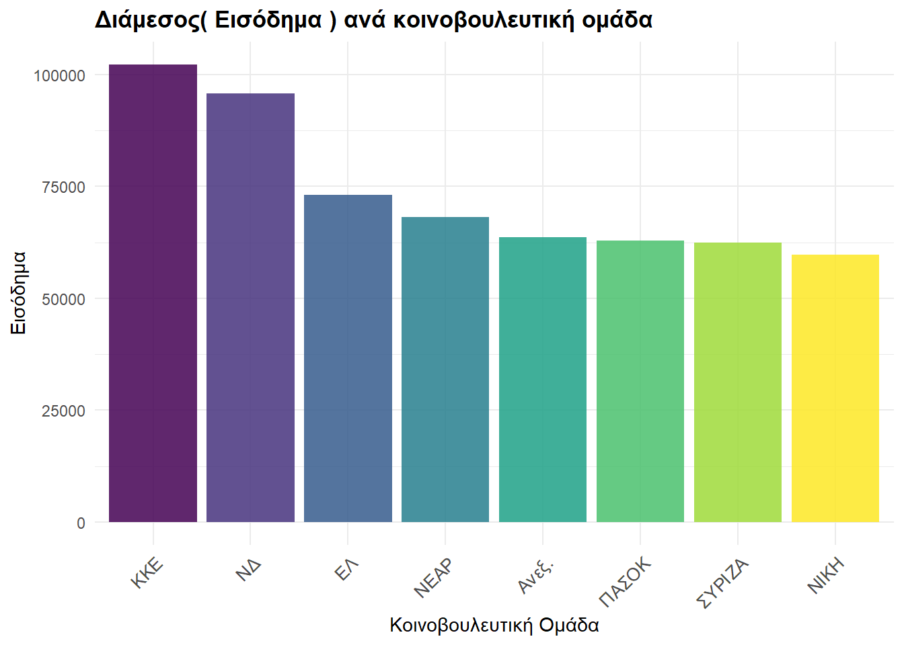
CautionΤι είναι η καμπύλη πυκνότητας;
Η καμπύλη πυκνότητας δείχνει τις περιοχές των εισοδημάτων, στις οποίες υπάρχουν αρκετά (ή λίγα) άτομα με αυτό το εύρος εισοδημάτων.
Picking joint bandwidth of 15000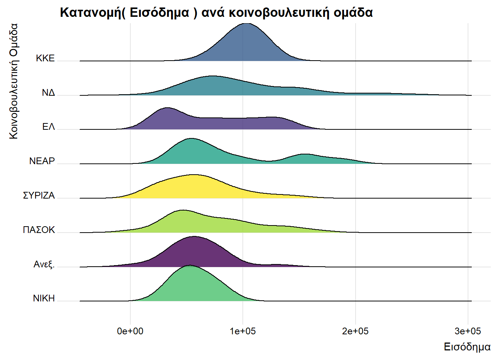
CautionΤι είναι το θηκόγραμμα;
Το θηκόγραμμα αποτελείται από τα εξής μέρη:
- ένα κουτί, στην εισοδηματική περιοχή του οποίου βρίσκεται το κεντρικό 50% των βουλευτών,
- μία χοντρή μαύρη κατακόρυφη γραμμή μέσα στο κουτί, η οποία χωρίζει τους βουλευτές τους κόμματος σε δύο ίδια μισά: αυτούς που έχουν πάνω από αυτό το εισόδημα κι αυτούς που έχουν κάτω από αυτό,
- δύο οριζόντιες γραμμές, οι οποίες ορίζουν το φυσιολογικό εισοδηματικό εύρος με βάση το τι εισοδήματα υπάρχουν στο κόμμα αυτό,
- κάποια σημεία έξω από τις προαναφερθείσες οριζόντιες γραμμές, τα οποία δείχνουν τις ακραίες εισοδηματικά τιμές, τις μη-φυσιολογικές (οι παρόντες outliers προέκυψαν μετά την αρχική εκκαθάριση βάσει του νέου δείγματος).
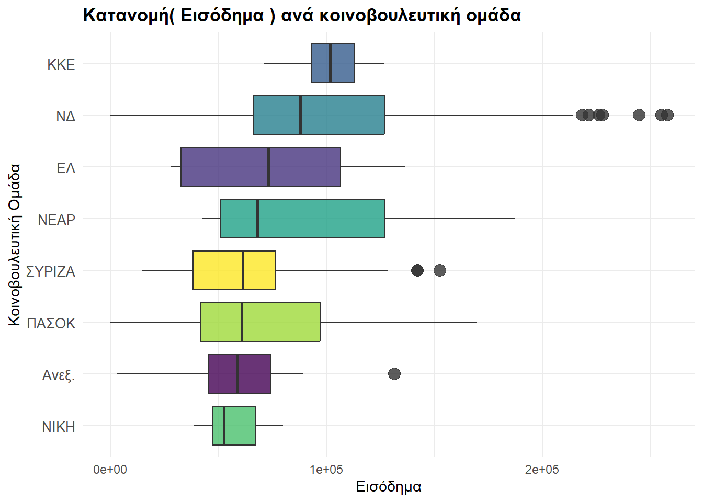
CautionΤι είναι η μήτρα απόστασης και το δεντρόγραμμα;
Η μήτρα απόστασης δείχνει την εισοδηματική απόσταση μεταξύ των κομμάτων. Το κόμμα της τάδε γραμμής έχει με το κόμμα της δείνα στήλης την απόσταση που ορίζει το κουτί στο οποίο διασταυρώνονεται η γραμμή του ενός με τη στήλη του άλλου.
Το δεντρόγραμμα δείχνει τις ομάδες που σχηματίζονται βάσει αυτών των αποστάσεων. Τα κόμματα που είναι κοντά σχηματίζουν μία ομάδα σε σχέση με τα πιο απόμακρα.
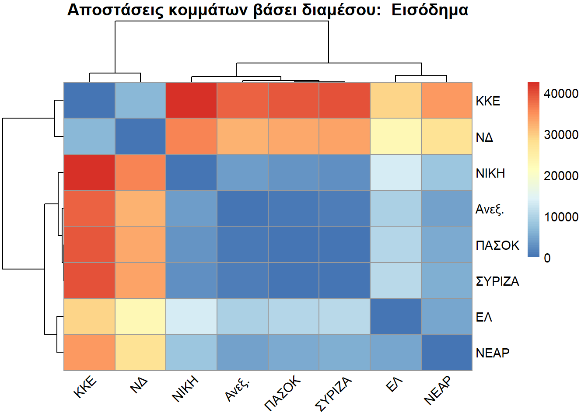
4 Καταθέσεις
Εδώ, όπως αναφέραμε και στην εισαγωγή, το ΚΚΕ έρχεται τελευταίο, κάτι που υποδεικνύει ότι όλα αυτά τα χρήματα πάνε όλα στη λειτουργεία του κόμματος, αφήνοντας τα μέλη με καταθέσεις που έχει ένας μικρομεσαίος Έλληνας (με ελάχιστες εξαιρέσεις). Τα μέλη της ΝΔ συνεχίζουν να έχουν γεμάτες τσέπες, ενώ φαίνεται η κοντινή σχέση να είναι με το ΠΑΣΟΚ.
CautionΤι είναι η διάμεση κατάθεση;
Η διάμεση κατάθεση μιας κοινοβουλευτικής ομάδας είναι η κατάθεση πάνω από την οποία έχουν τα μισά της άτομα και κάτω από την οποία τα άλλα μισά. Είναι κάτι σαν τον μέσο όρο, προσδιορίζει πού περίπου βρίσκεται από άποψη καταθέσεων η κοινοβουλευτική ομάδα. Χωρίς όμως να έχει την απαράδεκτη στατιστικά ευαισθησία αυτού στις ακραίες τιμές, όπου αρκεί ένας Γ. Γεραπετρίτης για να σου πετάξει την εκτίμηση ένα κάρο μονάδες πάνω από το φυσιολογικό.
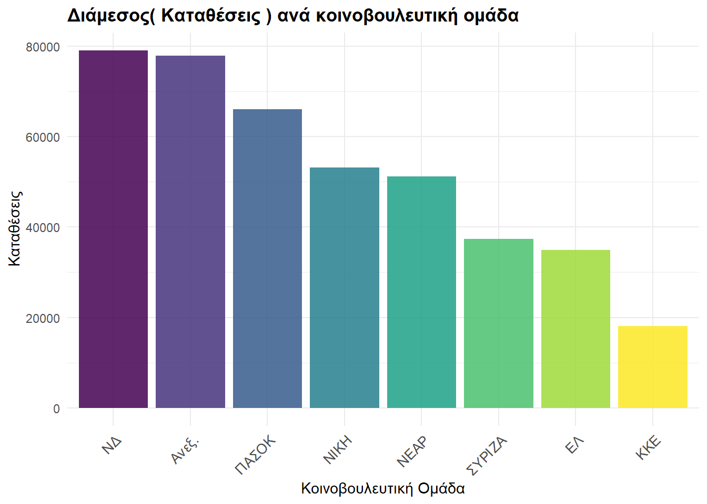
CautionΤι είναι η καμπύλη πυκνότητας;
Η καμπύλη πυκνότητας δείχνει τις περιοχές των καταθέσεων, στις οποίες υπάρχουν αρκετά (ή λίγα) άτομα με αυτό το εύρος καταθέσεων.
Picking joint bandwidth of 26500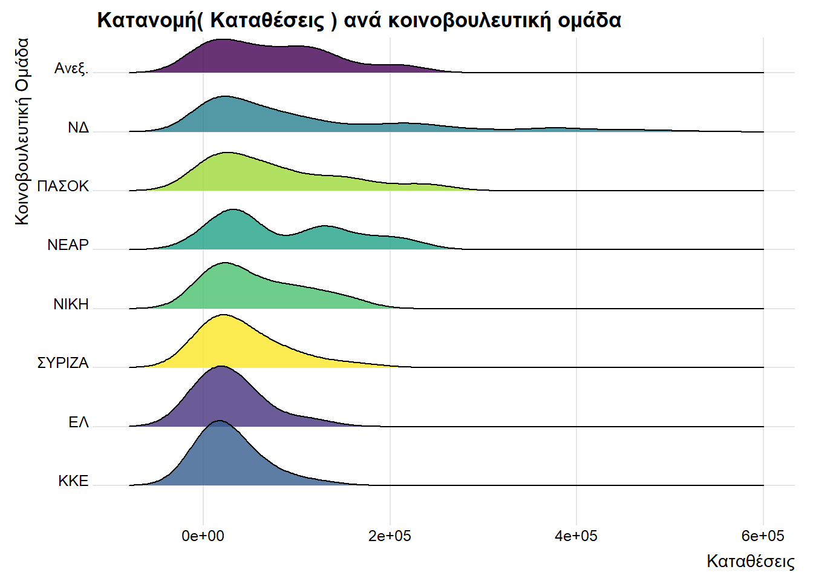
CautionΤι είναι το θηκόγραμμα;
Το θηκόγραμμα αποτελείται από τα εξής μέρη:
- ένα κουτί, στην περιοχή του οποίου βρίσκεται το κεντρικό 50% των βουλευτών από άποψη μεγέθους καταθέσεων,
- μία χοντρή μαύρη κατακόρυφη γραμμή μέσα στο κουτί, η οποία χωρίζει τους βουλευτές τους κόμματος σε δύο ίδια μισά: αυτούς που έχουν πάνω από αυτή την κατάθεση κι αυτούς που έχουν κάτω από αυτή,
- δύο οριζόντιες γραμμές, οι οποίες ορίζουν το φυσιολογικό εύρος για μια κατάθεση με βάση το τι καταθέσεις υπάρχουν στο κόμμα αυτό,
- κάποια σημεία έξω από τις προαναφερθείσες οριζόντιες γραμμές, τα οποία δείχνουν τις ακραίες τιμές καταθέσεων, τις μη-φυσιολογικές (οι παρόντες outliers προέκυψαν μετά την αρχική εκκαθάριση βάσει του νέου δείγματος).
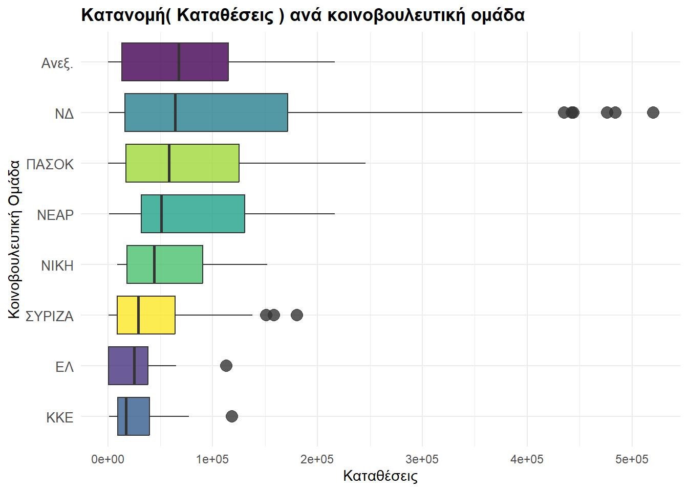
CautionΤι είναι η μήτρα απόστασης και το δεντρόγραμμα;
Η μήτρα απόστασης δείχνει την απόσταση μεταξύ των κομμάτων με βάση τη διάμεση κατάθεση του καθενός. Το κόμμα της τάδε γραμμής έχει με το κόμμα της δείνα στήλης την απόσταση που ορίζει το κουτί στο οποίο διασταυρώνονεται η γραμμή του ενός με τη στήλη του άλλου.
Το δεντρόγραμμα δείχνει τις ομάδες που σχηματίζονται βάσει αυτών των αποστάσεων. Τα κόμματα που είναι κοντά σχηματίζουν μία ομάδα σε σχέση με τα πιο απόμακρα.
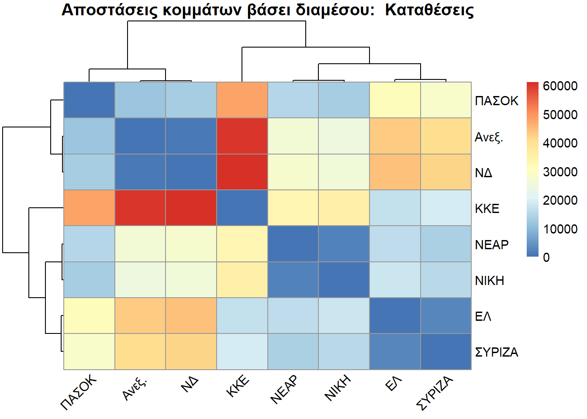
5 Περαιτέρω
Τα παρακάτω δεν προσέφεραν κάτι περισσότερο στην όλη μελέτη, οπότε δεν θα γίνει αναφορά σε αυτά. Παραταύτα, παραθέτουμε τα γραφήματά τους για τον αναγνώστη που θέλει να τα εξετάσει.
WarningΓραφήματα
Σύγκριση
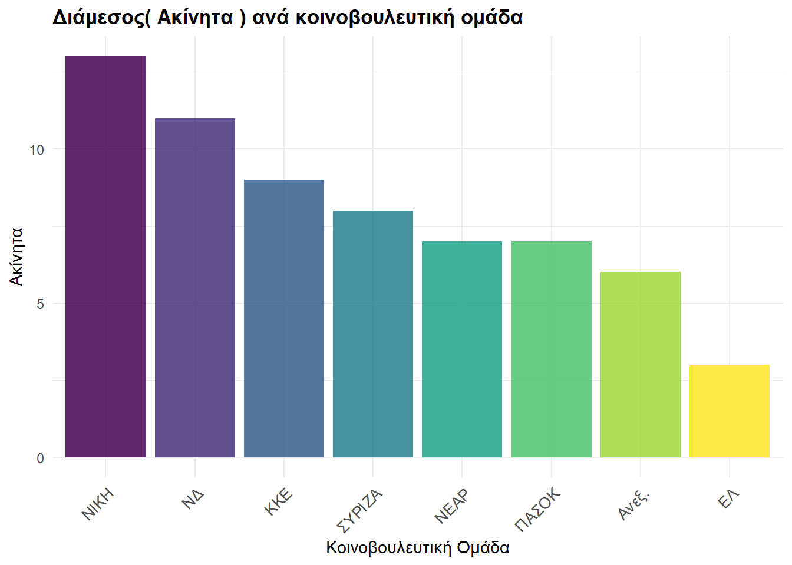
Κατανομές
Picking joint bandwidth of 2.57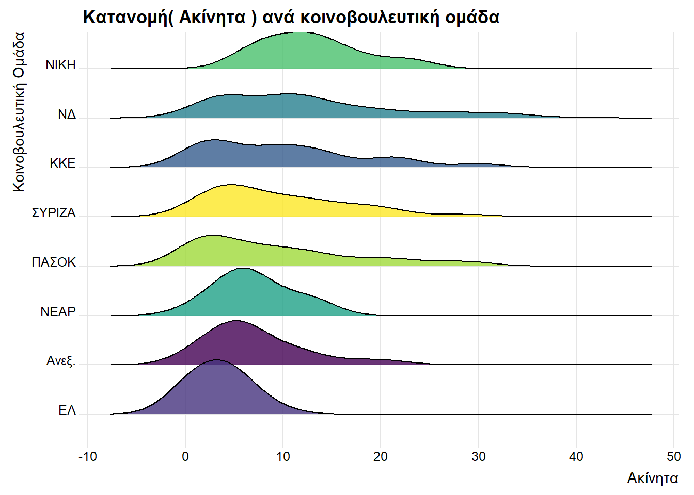
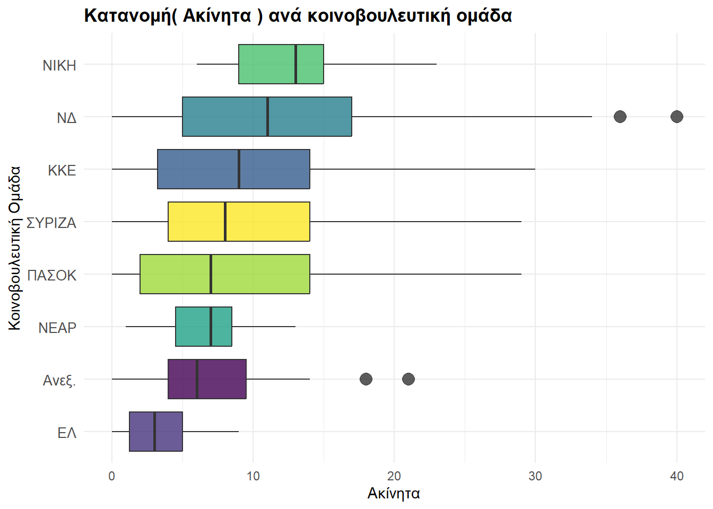
Σχέσεις
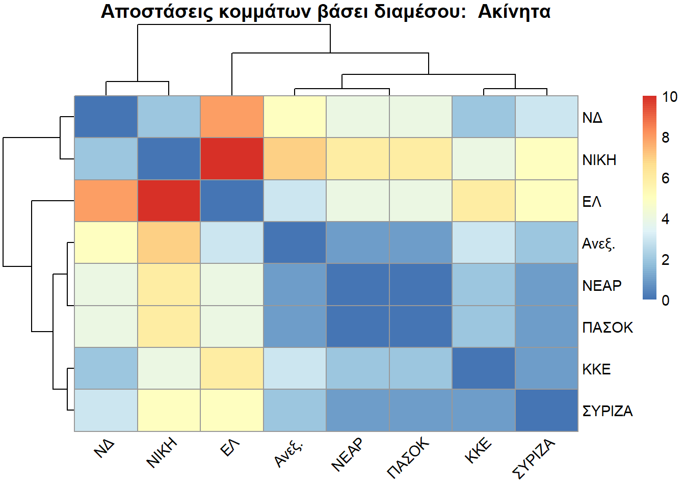
WarningΓραφήματα
Σύγκριση
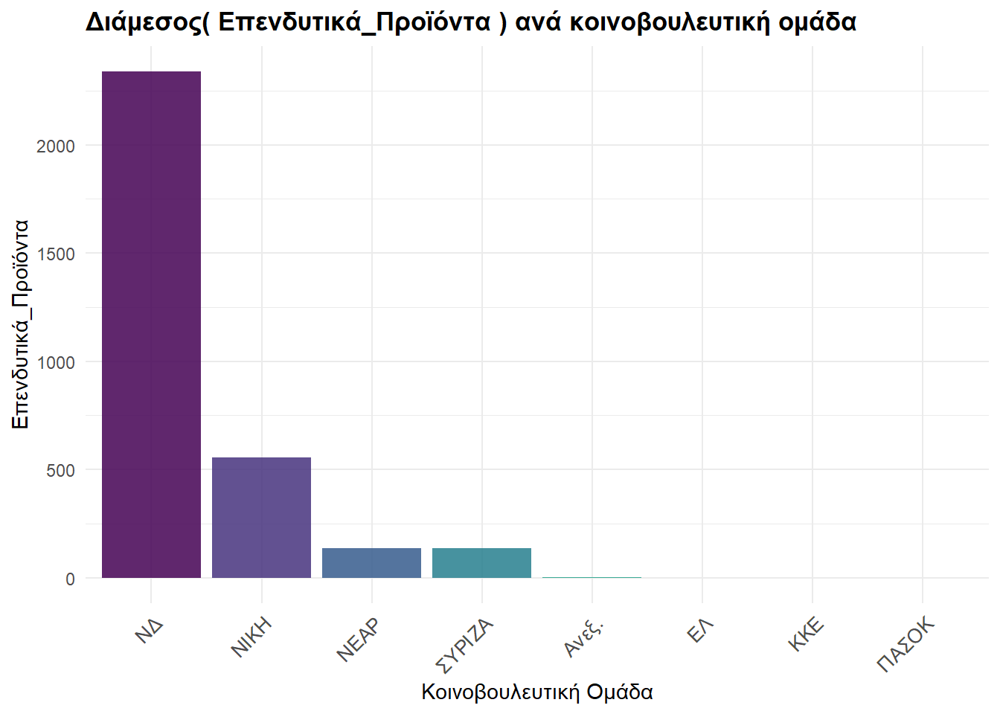
Κατανομές
Picking joint bandwidth of 390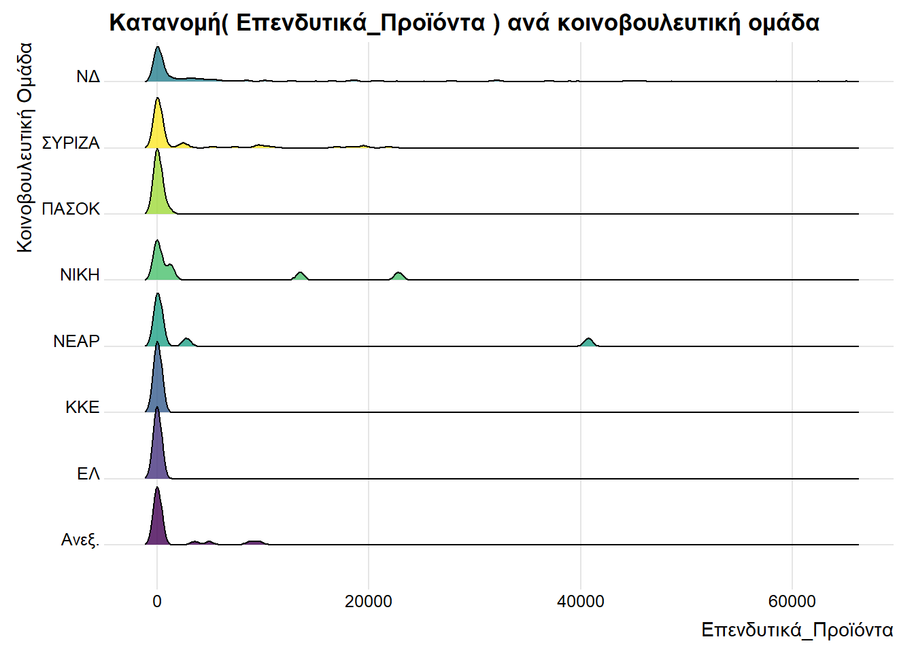
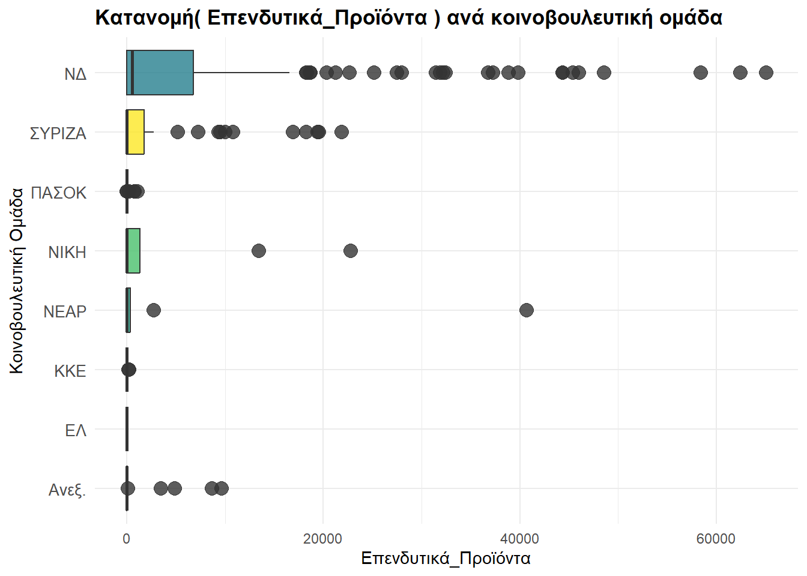
Σχέσεις
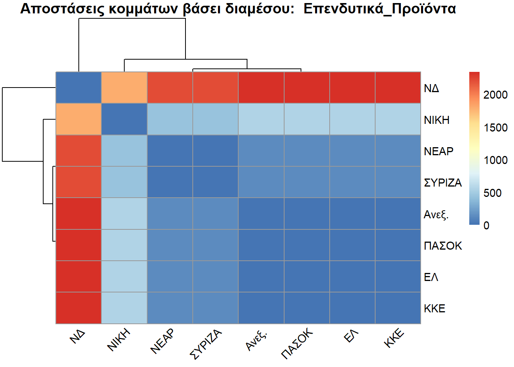